Pcbnew
Edytor obwodów drukowanych
Spis tre¶ci
- Wprowadzenie
- Instalacja i konfiguracja
- Instalacja oprogramowania
- Modyfikacja domy¶lnej konfiguracji
- Tabele footprintów - Zarz±dzanie bibliotekami po nowemu
- Globalna tabela bibliotek footprintów
- Lokalna tabela bibliotek footprintów zale¿na od projektu
- Konfiguracja pocz±tkowa
- Dodawanie nowych wpisów w tabeli
- Pobieranie warto¶ci ze zmiennych systemowych
- U¿ywanie wtyczki GitHub
- Przyk³adowe wpisy w tabeli
- Co robiæ z plikami w COW?
- Generalne zalecenia przy u¿ywaniu tabeli bibliotek
- Obs³uga programu
- Dostêp do poleceñ
- Polecenia zwi±zane z mysz±
- Wybór siatki
- Ustawianie powiêkszenia - Zoom
- Wy¶wietlanie pozycji kursora
- Szybki dostêp do poleceñ - Skróty klawiszowe
- Jednostki miar u¿ywane w oknach dialogowych
- G³ówne menu aplikacji
- Polecenia zwi±zane z ikonami na g³ównym pasku narzêdzi
- Polecenia zwi±zane z ikonami na prawym panelu
- Polecenia zwi±zane z ikonami na lewym panelu
- Menu podrêczne i szybka edycja elementów na PCB
- Tryby pracy
- Implementacja schematu na obwodzie drukowanym
- Ustawianie i wy¶wietlanie warstw roboczych
- Tworzenie i modyfikacja projektu obwodu drukowanego
- Rozmieszczanie footprintów
- Ustawienia i parametry trasowania ¶cie¿ek
- Tworzenie wype³nionych stref
- Tworzenie wype³nionych stref na warstwach sygna³owych (miedzi)
- Tworzenie stref na warstwach sygna³owych
- Opcje wype³nienia
- Dodawanie strefy odciêtej wewn±trz strefy wype³nionej
- Edycja krawêdzi
- Powielanie istniej±cych stref
- Edycja parametrów stref
- Koñcowe wype³nianie strefy
- Zmiany nazw sieci w strefie
- Tworzenie stref na warstwach technicznych
- Przygotowywanie plików produkcyjnych
- Uwaga wstêpna
- Koñcowe przygotowania projektu
- Koñcowy test DRC
- Ustawienie punktu pocz±tkowego osi pomocniczej
- Generowanie plików dla fotoplotera
- Globalne ustawienia prze¶witu dla warstw maski lutowniczej i maski pasty lutowniczej
- Generowanie plik(ów) wierceñ
- Generowanie dokumentacji monta¿owych
- Generowanie plików dla automatów montuj±cych P∧P
- Opcje zaawansowane
- ModEdit - Zarz±dzanie bibliotekami footprintów
- Wprowadzenie
- Edytor ModEdit
- Interfejs u¿ytkownika ModEdit
- G³ówny pasek narzêdziowy
- Tworzenie nowego footprintu
- Tworzenie nowej biblioteki
- Zapisanie footprintu w aktywnej bibliotece
- Przenoszenie footprintów pomiêdzy bibliotekami
- Zapisywanie footprintów z p³ytek w aktywnej bibliotece
- Dokumentacja dla bibliotek footprintów
- Dokumentowanie bibliotek - zalecenia praktyczne
- ModEdit - Tworzenie i edycja footprintów
- Wprowadzenie
- Elementy sk³adowe footprintów
- Uruchamianie ModEdit oraz wybór footprintu w celu edycji
- Paski narzêdziowe edytora footprintów
- Menu podrêczne
- Okno w³a¶ciwo¶ci footprintu
- Tworzenie nowego footprintu
- Dodawanie i edycja pól lutowniczych
- W³a¶ciwo¶ci pól tekstowych
- Informacje na temat automatycznego rozmieszczania footprintów
- Atrybuty
- Dokumentacja dla bibliotek footprintów
- Zarz±dzanie modelami do wizualizacji 3D
- Zapis footprintu w aktywnej bibliotece
- Zapis footprintu na p³ytce
- ModView - Przegl±darka bibliotek
Prawa autorskie
Copyright © 2010-2014. Ten dokument jest chroniony prawem autorskim. Lista autorów znajduje siê poni¿ej.
Mo¿esz go rozpowszechniaæ oraz modyfikowaæ na zasadach okre¶lonych w GNU General Public License (http://www.gnu.org/licenses/gpl.html), wersja 3 lub pó¼niejsza, albo okre¶lonych w Creative Commons Attribution License (http://creativecommons.org/licenses/by/3.0/), wersja 3.0 lub pó¼niejsza.
Wszystkie znaki towarowe u¿yte w tym dokumencie nale¿± do ich w³a¶cicieli.
Autorzy
Jean-Pierre Charras, Wayne Stambaugh, Fabrizio Tappero, Kerusey Karyu.
Kontakt
Wszelkie komentarze lub sugestie dotycz±ce tego dokumentu prosimy kierowaæ na listê dyskusyjn± deweloperów programu KiCad: https://launchpad.net/~kicad-developers
Wersja
19 Pa¼dziernika 2014
Informacja dla u¿ytkowników komputerów Apple Macintosh
Wsparcie programu KiCad dla systemu operacyjnego Apple OS X jest w zaawansowanej fazie eksperymentalnej.
1. Wprowadzenie
Kluczowe w³a¶ciwo¶ci
Pcbnew jest potê¿n± aplikacj± do trasowania obwodów drukowanych, dostêpn± zarówno dla systemów Linux jak i Windows.
Jest on u¿ywany w po³±czeniu z oprogramowaniem do tworzenia schematów Eeschema, który dostarcza pliki list sieci - opisuj±cych po³±czenia elektryczne wymagane przy trasowaniu PCB.
Drugi program CvPcb jest u¿ywany do przypisania footprintów poszczególnym sk³adnikom zawartym w li¶cie sieci generowanej przez Eeschema, które s± u¿ywane przez Pcbnew. Mo¿na to zrobiæ albo interaktywnie, albo automatycznie za pomoc± plików przypisañ.
Pcbnew zarz±dza te¿ bibliotekami footprintów. Ka¿dy fooprint jest rysunkiem fizycznych komponentów zawieraj±cy jego "odcisk" - czyli uk³ad wyprowadzeñ zapewniaj±cy po³±czenia ze sk³adnikiem. Wymagane footprinty s± ³adowane automatycznie podczas wczytywania listy sieci generowanej przez Cvpcb.
Pcbnew ³±czy automatycznie i natychmiast wszelkie zmiany w obwodzie wykonywane przez usuniêcie b³êdnych ¶cie¿ek, dodawanie nowych komponentów lub modyfikacje ka¿dej warto¶ci (i pod pewnymi warunkami tak¿e wszelkich oznaczeñ elementów) ze starych footprintów lub nowych footprintów, w zale¿no¶ci od po³±czeñ elektrycznych znajduj±cych siê na schemacie.
Pcbnew zapewnia mo¿liwo¶æ wy¶wietlania linii prowadz±cych (ratsnest), ³±cz±cych poszczególne footprinty zgodnie z po³±czeniami na schemacie. Po³±czenia te s± ¶ledzone dynamicznie, nawet podczas przesuwania ¶cie¿ek i footprintów.
Pcbnew ma równie¿ aktywne narzêdzie do sprawdzania poprawno¶ci zasad projektowych (DRC), które automatycznie informuje o jakichkolwiek b³êdach w ¶cie¿kach w czasie rzeczywistym.
Pcbnew mo¿e automatycznie generowaæ wype³niaj±ce obszary miedzi, z lub bez ³±cz termicznych w miejscach pól lutowniczych i przelotek.
Pcbnew umo¿liwia w pe³ni manualne oraz pó³automatyczne trasowanie ¶cie¿ek, dziêki wbudowanemu routerowi z mo¿liwo¶ci± omijania lub rozpychania istniej±cych ¶cie¿ek, tzw. router Push and Shove. Oprócz tego Pcbnew ma tak¿e prosty, ale skuteczny auto-router pomocny w szybkim tworzeniu obwodu drukowanego. Eksport oraz import w formacie SPECCTRA DSN pozwala korzystaæ równie¿ z zaawansowanych zewnêtrznych auto-routerów.
Pcbnew udostêpnia opcje specjalnie do produkcji uk³adów przeznaczonych dla bardzo wysokich czêstotliwo¶ci (takich jak pola lutownicze trapezoidalne i o z³o¿onej postaci, automatyczne tworzenie p³askich cewek na obwodzie drukowanym...).
Pcbnew wy¶wietla elementy (¶cie¿ki, pola lutownicze, teksty, rysunki ...) w rzeczywistym rozmiarze i wed³ug osobistych preferencji:
- Wy¶wietlanie w ca³o¶ci lub jako szkic.
- Wy¶wietlanie prze¶witów ¶cie¿ek/pól lutowniczych...
G³ówne cechy projektu
Pcbnew posiada wewnêtrzn± rozdzielczo¶æ okre¶lon± na 1 nanometr.
Pcbnew mo¿e operowaæ na 32 warstwach miedzi oraz 18 warstwach technicznych (m.in. warstwy opisowe, soldermaski, warstwy kleju, pasty lutowniczej, rysunkowa i komentarzy) oraz zarz±dza w czasie rzeczywistym po³±czeniami pomocniczymi (ratsnest) dla nieistniej±cych jeszcze ¶cie¿ek.
Wy¶wietlanie elementów PCB (¶cie¿ki, pola lutownicze, tekst, rysunki.) mo¿e zostaæ spersonalizowane:
- Przez wy¶wietlanie w trybie pe³nym lub trybie uproszczonym.
- Wy¶wietlanie w trybie wysokiego kontrastu
- Wy¶wietlanie lub nie prze¶witów na ¶cie¿kach.
- Poprzez ukrywanie niektórych warstw (warstwy miedzi, warstwy techniczne, pola miedzi, footprinty, opisy...), które jest przydatne w przypadkach gêsto upakowanych, wielowarstwowych obwodów.
Przy skomplikowanych obwodach, wy¶wietlanie warstw, pól miedzi, elementów mo¿e zostaæ wy³±czone w sposób selektywny dla polepszenia czytelno¶ci zawarto¶ci ekranu.
Footprinty mog± byæ obracane o dowolny k±t, z krokiem 0,1 stopnia.
Pola lutownicze mog± mieæ kszta³t okr±g³y, prostok±tny, owalny, lub trapezoidalny (ostatni jest potrzebny w produkcji obwodów dla wysokich czêstotliwo¶ci). Dodatkowo niektóre podstawowe pola mo¿na zgrupowaæ. Mo¿na dostrajaæ zarówno rozmiar ka¿dego pola, jak i warstwy na których on wystêpuje. Otwory w polach lutowniczych mog± zostaæ równie¿ przesuniête.
Pcbnew mo¿e automatycznie generowaæ pola miedzi (polygony, strefy wype³nieñ) z automatyczn± generacj± ³±cz termicznych wokó³ pól lutowniczych maj±cych po³±czenie z polem miedzi.
Bezpo¶rednio z paska narzêdzi Pcbnew mo¿na uruchomiæ edytor footprintów ModEdit. Edytor pozwala na tworzenie lub modyfikacjê footprint znajduj±cych siê na PCB lub w bibliotece, a nastêpnie zapisywane ich. Footprint zapisany na PCB mo¿e byæ nastêpnie zapisany w bibliotece. Ponadto wszystkie footprinty na p³ytce mo¿na zapisaæ do biblioteki, tworz±c archiwum footprintów.
Pcbnew generuje w bardzo prosty sposób wszystkie potrzebne dokumenty:
- Pliki produkcyjne:
Pliki dla fotoploterów w formacie GERBER RS274X
Pliki wierceñ w formacie EXCELLON - Pliki dla ploterów w formatach HPGL, SVG oraz DXF
- Mapy rysunków i wierceñ w formacie POSTSCRIPT
- Pliki dla wydruków lokalnych.
Wa¿ne informacje
Pcbnew wymaga myszy z trzema przyciskami. Trzeci przycisk jest obowi±zkowy.
Nale¿y zauwa¿yæ, i¿ pozosta³e narzêdzia Eeschema oraz CvPcb mog± byæ wymagane do stworzenia poprawnej listy sieci.
2. Instalacja i konfiguracja
Instalacja oprogramowania
Procedura instalacji zosta³a opisana w dokumentacji programu KiCad Manager.
Modyfikacja domy¶lnej konfiguracji
Domy¶lny plik konfiguracji: kicad.pro jest dostarczany w katalogu kicad/share/template. Jest on u¿ywany jako pocz±tkowa konfiguracja dla wszystkich nowych projektów.
Plik konfiguracji mo¿na zmodyfikowaæ wed³ug potrzeb, szczególnie je¶li chodzi o zmianê listy dostêpnych bibliotek. Aby wykonaæ modyfikacjê tego pliku:
- Nale¿y uruchomiæ Pcbnew u¿ywaj±c programu zarz±dzaj±cego KiCad lub bezpo¶rednio z linii poleceñ (W systemie Windows na przyk³ad wydaj±c polecenie
c:\kicad\bin\pcbnew.exe. W systemie Linux: uruchamiaj±c/usr/local/kicad/bin/kicadlub/usr/local/kicad/bin/pcbnewje¶li pliki binarne znajduj± siê w/usr/local/kicad/bin). - Wybraæ Ustawienia / Biblioteka
- Dokonaæ edycji.
- Zapisaæ zmodyfikowan± konfiguracjê (Zapisz ustawienia) z powrotem do
kicad/share/template/kicad.pro
Tabele footprintów - Zarz±dzanie bibliotekami po nowemu
Pocz±wszy od wersji z dnia 2013-12-08 BZR4535-product, Pcbnew nie bêdzie u¿ywa³ narzêdzia do konfiguracji bibliotek opieraj±cego siê wy³±cznie na ¶cie¿kach dostêpu. Nowa implementacja tego narzêdzia opiera siê na tabeli bibliotek footprintów.
Poni¿szy rysunek pokazuje okno dialogowe z wspomnian± tabel±. Aby go wywo³aæ nale¿y u¿yæ polecenia Tabela bibliotek.

Tabela bibliotek footprintów jest u¿ywana do mapowania plików bibliotek obs³ugiwanych przez program do ich nazw skrótowych. Nazwa skrótowa jest u¿ywana do wyszukiwania footprintów zamiast poprzedniej metody z wyszukiwaniem plików zgodnie z ustalonym uk³adem ¶cie¿ek dostêpu. Pozwala to programowi Pcbnew na dostêp do footprintów za pomoc± tej samej nazwy w ró¿nych bibliotekach gwarantuj±c tym samym, ¿e w³a¶ciwy footprint zostanie za³adowany z odpowiedniej biblioteki. Pozwala to równie¿ na obs³ugê bibliotek pochodz±cych z innych programów (z pomoc± wtyczek) EDA, takich jak np. Eagle czy gEDA.
Globalna tabela bibliotek footprintów
Globalna tabela bibliotek footprintów zawiera listê biblioteki, które s± dostêpne zawsze, niezale¿nie od obecnie wczytanego projektu. Tabela ta jest zapisana w pliku fp-lib-table w katalogu domowym u¿ytkownika. Jego rzeczywista lokacja zale¿y u¿ytego systemu operacyjnego.
Lokalna tabela bibliotek footprintów zale¿na od projektu
Lokalna tabela bibliotek footprintów zale¿na od projektu zawiera listê bibliotek, które s± dostêpne wy³±cznie w obecnie wczytanym projekcie. Lokalna tabela mo¿e byæ modyfikowana tylko wtedy, gdy zostanie ona za³adowana razem z list± sieci tego projektu. Gdy projekt nie zosta³ za³adowany lub gdy taka lokalna tabela nie istnieje, tworzona jest pusta tabela, któr± bêdzie mo¿na wype³niæ i pó¼niej zapisaæ razem z plikiem przypisañ footprintów (z rozszerzeniem .cmp).
Konfiguracja pocz±tkowa
Gdy Pcbnew lub CvPcb zostanie uruchomiony i globalna tabela bibliotek fp-lib-table nie zostanie znaleziona w katalogu domowym u¿ytkownika, Pcbnew bêdzie próbowa³ skopiowaæ domy¶ln± tabelê bibliotek fp_global_table zapisan± w folderze template do pliku fp-lib-table w katalogu domowym u¿ytkownika. Je¶li plik fp_global_table nie zosta³ znaleziony, to zamiast operacji kopiowania zostanie utworzona pusta tabela. Gdyby taka sytuacja mia³a miejsce u¿ytkownik ma te¿ mo¿liwo¶æ skopiowania fp_global_table samodzielnie lub "rêczne" skonfigurowania tabeli.
Domy¶lna tabela bibliotek zawiera wszystkie standardowe biblioteki jakie zosta³y zainstalowane razem z programem KiCad EDA Suite.
Dodawanie nowych wpisów w tabeli
By móc u¿ywaæ biblioteki najpierw nale¿y dodaæ globaln± lub lokaln± tabelê. Lokalna tabela ma zastosowanie tylko gdy istnieje otwarta lista sieci projektu.
Ka¿da pozycja tabeli musi posiadaæ unikaln± nazwê skrótow±. Nie musi ona mieæ jakiegokolwiek zwi±zku z bie¿±c± nazw± pliku lub ¶cie¿ki do niego. Znak dwukropka ':' nie mo¿e byæ u¿ywany w nazwach skrótowych. Ka¿da pozycja musi równie¿ odnosiæ siê do prawid³owej ¶cie¿ki/nazwy pliku w zale¿no¶ci od typu biblioteki. ¦cie¿ki do plików mog± byæ bezpo¶rednie, wzglêdne lub pochodziæ ze specjalnych zmiennych systemowych - opisanych dalej.
Aby biblioteka zosta³a wczytana przez Pcbnew musi byæ tak¿e wybrana w³a¶ciwa wtyczka obs³uguj±ca dany format pliku. Pcbnew obecnie wspiera nastêpuj±ce formaty plików bibliotek: KiCad Legacy, KiCad Pretty, Eagle oraz gEDA.
Istnieje równie¿ pole przeznaczone do wpisania opisu dla danego wpisu w tabeli. Pole z opcjami nie jest w tej chwili u¿ywane, zatem umieszczanie jakichkolwiek opcji nie ma znaczenia przy ³adowaniu bibliotek.
Proszê zauwa¿yæ, ¿e nie mo¿na umie¶ciæ dwóch takich samych nazw skrótowych w jednej tabeli. Jednak¿e, mo¿na wpisaæ t± sam± nazwê skrótow± w globalnej i lokalnej tabeli bibliotek, poniewa¿ tabela lokalna ma wiêkszy priorytet ni¿ tabela globalna w takim przypadku.
Gdy wpisy zostan± zdefiniowane w lokalnej tabeli bibliotek, to plik fp-lib-table zawieraj±cy te wpisy zostanie umieszczony w folderze sk±d pochodzi lista sieci.
Pobieranie warto¶ci ze zmiennych systemowych
Jednym z najwiêkszych zalet tabeli bibliotek footprintów jest mo¿liwo¶æ u¿ywania odno¶ników do zmiennych systemowych. Pozwala to na zdefiniowanie w³asnych ¶cie¿ek do bibliotek w zmiennych systemowych i u¿ywanie ich w projektach.
Odno¶niki do zmiennych systemowych mo¿na wplataæ w tre¶æ pól zawieraj±cych ¶cie¿kê do pliku u¿ywaj±c powszechnie znanego formatu ${nazwa_zmiennej}. Domy¶lnie Pcbnew definiuje zmienn± ¶rodowiskow± KISYSMOD. Wskazuje ona na miejsce, gdzie zainstalowane zosta³y biblioteki instalowane razem z programem KiCad EDA Suite. Mo¿na j± re-definiowaæ samodzielnie, co pozwala na zast±pienie standardowych bibliotek ich w³asnymi odpowiednikami. Gdy wczytana zostanie lista sieci, Pcbnew automatycznie definiuje równie¿ zmienn± KIPRJMOD. Pozwala to na tworzenie bibliotek w miejscu wskazywanym przez projekt bez konieczno¶ci definiowania bezwzglêdnej ¶cie¿ki do biblioteki w lokalnej tabeli footprintów projektu.
U¿ywanie wtyczki GitHub
GitHub to specjalna wtyczka pozwalaj±ca na ³±czenie siê ze zdalnym repozytorium GitHub zawieraj±cym footprinty w formacie .pretty (nowa wersja formatu zapisu footprintów przez program KiCad). Repozytorium to jest tylko do odczytu, ale wtyczka umo¿liwia równie¿ dostêp do technologi "Copy On Write" (COW) wspieraj±cej mo¿liwo¶æ edycji footpritnów odczytanych z repozytorium GitHub i zapisanie ich nowych wersji na dysku lokalnym, które pó¼niej mo¿na wys³aæ z w celu ich aktualizacji. Sama wtyczka nie umo¿liwia zapisu do repozytorium.
By dodaæ wpis GitHub do tabeli bibliotek, pole ¦cie¿ka musi zostaæ wype³niona wa¿nym adresem URL do repozytorium GitHub.
Przyk³adowo:
https://github.com/liftoff-sr/pretty_footprints
Zwykle poprawna ¶cie¿ka URL jest tworzona wg nastêpuj±cego schematu:
https://github.com/nazwa_u¿ytkownika/nazwa_repozytorium
Pole Typ Wtyczki musi byæ ustawione jako Github. Aby w³±czyæ funkcjê "Copy On Write" nale¿y w polu Opcje dodaæ parametr allow_pretty_writing_to_this_dir który zawiera³ bêdzie ¶cie¿kê na dysku lokalnym gdzie zapisywane bêd± pliki z modyfikacjami. Je¶li ta opcja zostanie pominiêta to biblioteka GitHub jest tylko do odczytu.
Footprinty tam zapisane s± po³±czeniem czê¶ci tylko do odczytu repozytorium GitHub i tre¶ci lokalnych zmian by utworzyæ zmodyfikowan± bibliotekê footprintów. Ka¿da modyfikacja biblioteki GitHub bêdzie trafiaæ do tej lokalnej biblioteki hybrydowej COW umieszczonej w odpowiednim folderze *.pretty.
Nale¿y w tym miejscu nadmieniæ, i¿ czê¶æ rezydentna COW pochodz±ca z repozytorium GitHub jest zawsze tylko do odczytu, co oznacza, ¿e nie mo¿na niczego samodzielnie usun±æ lub zmodyfikowaæ bezpo¶rednio w samym repozytorium GitHub. Niezale¿nie czy biblioteka bêdzie hybrydowa, czyli po³±czona z lokalnej czê¶ci tylko do odczytu i zapisu, czy tylko czê¶æ zdaln± przeznaczon± tylko do odczytu, bêdzie ona dalej zwana bibliotek± "Github" w dalszych rozwa¿aniach.
Przyk³adowe wpisy w tabeli
Poni¿sza tabela pokazuje wpis z tabeli bibliotek, której nie zosta³a przypisana opcja allow_pretty_writing_to_this_dir:
| Nazwa skrótowa | ¦cie¿ka | Typ wtyczki | Opcje | Opis |
| github | https://github.com/liftoff-sr/pretty_footprints | Github | Liftoff's GH footprints |
Nastêpna tabela pokazuje wpis z tabeli bibliotek z opcj± dotycz±c± COW. Zmienna ${HOME} jest tylko przyk³adowa. Folder github.pretty jest umieszczony w folderze do którego prowadzi ¶cie¿ka ${HOME}/pretty/. W ka¿dym przypadku u¿ycia opcji allow_pretty_writing_to_this_dir, wymagane jest samodzielne utworzenie tego folderu i musi on posiadaæ rozszerzenie .pretty.
| Nazwa skrótowa | ¦cie¿ka | Typ wtyczki | Opcje | Opis |
| github | https://github.com/liftoff-sr/pretty_footprints | Github | allow_pretty_writing_to_this_dir=${HOME}/pretty/github.pretty | Liftoff's GH footprints |
Footprinty pobierane z repozytorium maj± zawsze pierwszeñstwo przed tymi umieszczonymi w folderze na który wskazuje opcja allow_pretty_writing_to_this_dir. Po zapisaniu footprintu do lokalnego folderu przechowuj±cego hybrydowe pliki COW, np. poprzez zapisanie zmian w edytorze footprintów, ¿adne aktualizacje GitHub nie bêd± widoczne podczas ³adowania footprintów o tej samej nazwie, ni¿ te, które zosta³y zapisane lokalnie.
Zawsze nale¿y korzystaæ z odrêbnego folderu *.pretty dla poszczególnych bibliotek GitHub i nigdy nie powinno siê ³±czyæ folderów przez przypisywanie tego samego folderu do innych bibliotek GitHub, gdy¿ mog³oby to doprowadziæ do ba³aganu nad którym nie by³oby mo¿na zapanowaæ.
Warto¶ci symboliczne w zmiennych systemowych zapisane w notacji ${nazwa_zmiennej} przypisane do opcji allow_pretty_writing_to_this_dir bêd± rozwijane automatycznie by utworzyæ w³a¶ciw± ¶cie¿kê, tak samo jak to ma miejsce w polu ¦cie¿ka.
Co robiæ z plikami w COW?
System COW to element przy¶pieszaj±cy wspó³u¿ytkowanie footprintów. Je¶li zawarto¶æ COW bêdzie regularnie przesy³ana do zarz±dcy repozytorium GitHub, bêdzie mo¿na pomóc w uaktualnianiu kopii znajduj±cych siê w repozytorium zdalnym.
Ca³o¶æ jest bardzo prosta. Za pomoc± poczty elektronicznej nale¿y wys³aæ pliki *.kicad_mod znajduj±ce siê w folderach systemu COW do osoby zarz±dzaj±cej repozytorium. Po otrzymaniu potwierdzenia, ¿e zmiany zosta³y zaakceptowane i wprowadzone, mo¿na skasowaæ wys³ane pliki z COW. Nowe wersje plików zostan± pobrane z repozytorium GitHub.
G³ównym celem jest utrzymywanie jak najmniejszego zestawu plików systemu COW jak tylko jest to mo¿liwe poprzez regularne przesy³anie zawartych w niej plików.
Generalne zalecenia przy u¿ywaniu tabeli bibliotek
Biblioteki footprintów mog± byæ zdefiniowane globalne lub lokalnie dla obecnie wczytanego projektu. Biblioteki umieszczone w globalnej tabeli bibliotek u¿ytkownika s± zawsze dostêpne i s± zapisane w pliku fp-lib-table w katalogu domowym u¿ytkownika. Globalne biblioteki bêd± dostêpne nawet je¶li nie zosta³a otwarta lista sieci danego projektu. Inaczej sprawa siê ma w przypadku lokalnych bibliotek, które s± aktywne wy³±cznie dla bie¿±cej listy sieci. Lokalna tabela bibliotek jest zapisywana w pliku fp-lib-table umieszczonym w tej samej ¶cie¿ce co lista sieci.
Nie ma przeszkód co do definiowania odno¶ników do bibliotek w obu tabelach. Dlatego te¿ nie zosta³o odgórnie okre¶lone w jaki sposób u¿ytkownik bêdzie wykorzystywa³ mo¿liwo¶ci jakie daj± globalne i lokalne tabele. S± jednak zalety i wady ka¿dego z rozwi±zañ, które nale¿y rozwa¿yæ.
Mo¿na zdefiniowaæ wszystkie biblioteki w globalnej tabeli bibliotek, co oznacza, ¿e bêd± one zawsze dostêpne gdy bêd± potrzebne. Wad± takiego rozwi±zania bêdzie szybko¶æ wyszukiwania w nich odpowiedniego footprintu.
Mo¿na zdefiniowaæ wszystkie biblioteki w lokalnej tabeli bibliotek. Zalet± takiego rozwi±zania bêdzie mo¿liwo¶æ zdefiniowania tylko tych bibliotek, które bêd± w danej chwili potrzebne oraz skrócenie czasu ich przeszukiwania. Wad± tego rozwi±zania bêdzie za¶ to, ¿e bêdzie trzeba zawsze pamiêtaæ, by dodaæ odpowiednie biblioteki dla ka¿dego nowego projektu.
Mo¿na zdefiniowaæ biblioteki w obu tabelach jednocze¶nie. Sensowne staje siê wtedy wpisanie bibliotek, które s± wykorzystywane prawie we wszystkich projektach do tabeli globalnej, a w lokalnych tabelach umieszczaæ tylko te, które s± przydatne tylko w tym konkretnym projekcie. Bêdzie to rozwi±zanie, które bêdzie posiada³o najwiêksz± elastyczno¶æ kosztem zmniejszenia szybko¶ci wyszukiwania.
3. Obs³uga programu
Dostêp do poleceñ
Pcbnew udostêpnia wiele ró¿nych poleceñ, które mog± byæ uruchamiane za pomoc±:
- Paska menu (na samej górze ekranu).
- G³ównego paska ikon znajduj±cego siê u góry (polecenia podstawowe)
- Bocznego paska ikon znajduj±cego siê z prawej strony (zawieraj±cego polecenia lub narzêdzia szczególne zwi±zane z edycj± obwodów drukowanych).
- Bocznego paska narzêdzi znajduj±cego siê z lewej strony (zawieraj±cego g³ównie prze³±czalne opcje wy¶wietlania).
- Przycisków myszy:
- Lewy klawisz s³u¿y do uruchamiania wybranego narzêdzia w miejscu gdzie znajduje siê kursor,
- Prawy klawisz otwiera menu podrêczne gdzie dostêpne s± polecenia kontekstowe zwi±zane z elementem znajduj±cym siê w miejscu kursora, jak równie¿ opcje wspólne takie jak: wybór powiêkszenia, wybór siatki, edycja elementu.
- Klawiatury (Klawisze funkcyjne F1, F2, F3, F4, Shift, Delete, +, -, Page Up, Page Down oraz Spacja). Klawisz Esc za¶ s³u¿y do przerywania w³a¶nie wykonywanej operacji.
Poni¿szy obrazek ilustruje niektóre z mo¿liwo¶ci dostêpu do poleceñ:
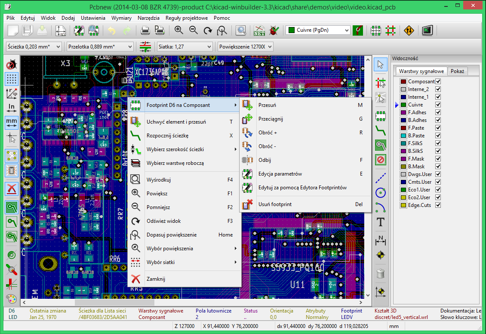
Polecenia zwi±zane z mysz±
Podstawowe polecenia
Lewy przycisk:
- Pojedynczy klik: wy¶wietla na pasku informacyjnym charakterystyczne w³a¶ciwo¶ci footprintu lub tekstu znajduj±cego siê w miejscu kursora.
- Podwójne klikniêcie: otwiera okno edycji dla elementu znajduj±cego siê w miejscu kursora (o ile taki element daje tak± mo¿liwo¶æ).
Klawisz centralny / Kó³ko myszy:
- Szybkie powiêkszenie oraz niektóre polecenia zwi±zane z mened¿erem warstw. (Co w konsekwencji wymusza stosowanie myszy trój-przyciskowej). Przytrzymanie klawisza centralnego i przeci±gniêcie myszy rysuje zaznaczenie obszaru, który po zwolnieniu klawisza bêdzie powiêkszony na ca³y dostêpny ekran roboczy. Kó³kiem myszy mo¿na te¿ przybli¿aæ lub oddalaæ obszar znajduj±cy siê wokó³ kursora.
- Przesuwanie widoku po zmianie konfiguracji zachowania ¶rodkowego klawisza myszy w ustawieniach programu.
Prawy przycisk:
- Otwiera podrêczne menu umo¿liwiaj±c edycjê elementu znajduj±cego siê w miejscu kursora.
Operacje na blokach
Operacje takie jak: przesuwanie, przerzucanie (na inn± warstwê), kopiowanie, obracanie oraz kasowanie zawarto¶ci bloku s± dostêpne z menu podrêcznego. Dodatkowo mo¿na te¿ dokonaæ przybli¿enia obszaru zaznaczonego jako blok.
Ramka zaznaczenia bloku jest rysowana poprzez przesuniêcie kursora mysz± razem z wci¶niêtym jej lewym klawiszem. Operacja zwi±zana z wyborem bloku jest przeprowadzana po zwolnieniu klawisza.
Naciskaj±c i przytrzymuj±c jeden z klawiszy Shift, Ctrl, lub oba razem, podczas rysowania zaznaczenia automatycznie wybiera jedn± z opcji: przesuwanie, przerzucanie, obrót lub kasowanie zawarto¶ci bloku:
| Przesuwanie myszy z wci¶niêtym lewym klawiszem | Zaznaczanie obszaru w celu jego przesuniêcia w inne miejsce |
| Shift + Przesuwanie myszy z wci¶niêtym lewym klawiszem | Zaznaczanie obszaru w celu jego przerzucenia na przeciwn± warstwê |
| Ctrl + Przesuwanie myszy z wci¶niêtym prawym klawiszem myszy | Zaznaczanie obszaru w celu jego obrotu o 90° |
| Shift + Ctrl + Przesuwanie myszy z wci¶niêtym lewym klawiszem myszy | Zaznaczanie obszaru w celu jego skasowania |
| Wci¶niêty centralny klawisz myszy | Zaznaczanie obszaru w celu jego powiêkszenia |
Podczas przesuwania bloku:
- Mo¿na przesun±æ blok na now± pozycjê oraz z pomoc± lewego klawisza myszy umie¶ciæ go w wybranej pozycji.
- By anulowaæ operacjê mo¿na u¿yæ prawego klawisza myszy i wybraæ Anuluj blok z podrêcznego menu (lub te¿ skorzystaæ z klawisza Esc).
- Alternatywnie je¶li ¿aden z klawiszy nie jest naci¶niêty podczas rysowania bloku, mo¿na u¿yæ prawego klawisza myszy by wy¶wietliæ podrêczne menu i wybraæ ¿±dan± akcjê z listy dostêpnych.
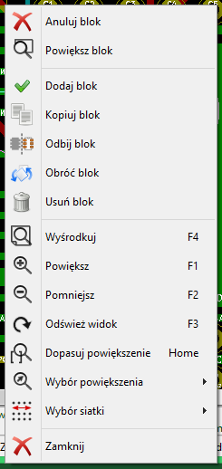
Dla ka¿dej operacji blokowej okno wyboru pozwala na dzia³ania, które bêd± ograniczaæ siê tylko do niektórych elementów. Ka¿de z powy¿szych poleceñ mo¿e zostaæ anulowane przez to samo menu podrêczne lub przez naci¶niêcie klawisza Esc.
Wybór siatki
W czasie tworzenia obwodu drukowanego kursor przesuwa siê po siatce, któr± mo¿na w³±czyæ lub wy³±czyæ z lewego panelu ikon±  .
.
Dowoln± predefiniowan±, b±d¼ zdefiniowan± przez u¿ytkownika siatkê mo¿na wybraæ z listy rozwijanej pod g³ównym paskiem narzêdzi lub z menu podrêcznego. Siatkê u¿ytkownika mo¿na zdefiniowaæ z poziomu menu w Wymiary / Siatka u¿ytkownika.
Ustawianie powiêkszenia - Zoom
Aby dostosowaæ powiêkszenie obszaru roboczego mo¿na skorzystaæ z:
- Menu podrêcznego (u¿ywaj±c prawego klawisza myszy) i wybraæ jedn± z dostêpnych pozycji.
- Klawiszy funkcyjnych klawiatury:
| F1 | Przybli¿anie (zoom in). |
| F2 | Oddalanie (zoom out). |
| F3 | Od¶wie¿anie zawarto¶ci pola roboczego. |
| F4 | Centrowanie pola roboczego wokó³ bie¿±cej pozycji kursora. |
- Kó³ka myszy.
- Lub te¿ z ¶rodkowego klawisza myszy, zaznaczaj±c obszar, który ma zostaæ powiêkszony.
Wy¶wietlanie pozycji kursora
Pozycja kursora jest wy¶wietlana albo w calach (inch lub ") lub w milimetrach (mm) zgodnie z wyborem wy¶wietlanych jednostek na lewym pasku opcji. Niezale¿nie od wybranych jednostek Pcbnew zawsze pracuje z dok³adno¶ci± 1 nanometra.
Pasek statusu wy¶wietlany na dole okna aplikacji zawiera nastêpuj±ce informacje:
- Bie¿±ce powiêkszenie.
- Pozycjê absolutn± kursora.
- Pozycjê wzglêdn± kursora. Pozycjê bazow± (0,0) do której odnosi siê pozycja wzglêdna mo¿na przenosiæ na dowoln± pozycjê absolutn± za pomoc± klawisza spacji. Dodatkowo wy¶wietlana jest bie¿±ca odleg³o¶æ do punktu bazowego.
Dodatkowo pozycjê wzglêdn± kursora mo¿na wy¶wietlaæ jako wspó³rzêdne polarne (promieñ + k±t). Zmiany sposobu wy¶wietlania pozycji wzglêdnej prze³±czyæ za pomoc± odpowiedniej opcji na lewym pasku opcji.
Szybki dostêp do poleceñ - Skróty klawiszowe
Wiele z poleceñ jest dostêpnych bezpo¶rednio z klawiatury za pomoc± klawiszy skrótów. Wybór polecenia jest niezale¿ne od tego czy bêd± u¿ywane ma³e lub du¿e litery. Wiele ze skrótów jest pokazywanych w menu. Jednak s± i takie, które nie wystêpuj± jawnie w ¿adnym menu:
- Klawisz Delete (lub Del): Usuwa footprint lub ¶cie¿kê (tylko je¶li tryb pracy z footprintami lub ¶cie¿kami jest aktywny).
- Klawisz V, je¶li aktywne jest narzêdzie prowadzenia ¶cie¿ek, prze³±cza warstwy jednocze¶nie wstawiaj±c przelotkê w miejscu zmiany warstwy.
- Klawisz + oraz -: Wybiera aktywn± warstwê.
- Klawisz ? wy¶wietla listê wszystkich skrótów klawiszowych.
- Klawisz Spacja zmienia pozycjê odniesienia dla wspó³rzêdnych relatywnych.
Jednostki miar u¿ywane w oknach dialogowych
Przy wy¶wietlaniu rozmiarów s± u¿ywane dwie jednostki miar:
- cal
- mm
zgodnie z wybran± opcj±  , któr± mo¿na znale¼æ na lewym panelu opcji.
, któr± mo¿na znale¼æ na lewym panelu opcji.
Jednak¿e mo¿na równie¿ wprowadzaæ dane tak¿e w innych dostêpnych jednostkach gdy wprowadzana jest now± warto¶æ. Akceptowane jednostki:
| 1in | (1 cal) |
| 1" | (idem) |
| 25th | (25 thou) |
| 25mi | (25 milsów, to samo co thou) |
| 6mm | (6 mm, jak sama nazwa wskazuje) |
Nale¿y przy tym stosowaæ siê do pewnych zasad:
- Spacje pomiêdzy liczb± a jednostk± s± dopuszczalne.
- Tylko dwie pierwsze litery s± znacz±ce.
Pamiêtaj:
W krajach, gdzie u¿ywany jest inny znak ni¿ kropka (.) jako separator warto¶ci dziesiêtnych, mo¿na u¿ywaæ równie¿ kropki, zastêpuj±c ni± w³a¶ciwy dla danej lokalizacji znak separatora dziesiêtnego. Zatem 1,5 oraz 1.5 s± tak samo traktowane.
G³ówne menu aplikacji
Pasek menu pozwala na dostêp do poleceñ zwi±zanych z plikami (jak odczyt i zapis), opcjami konfiguracyjnymi, drukowaniem oraz rysowaniem z pomoc± ploterów, jak równie¿ dostêp do plików pomocy.
Menu Plik
Pozwala na ³adowanie i zapisywanie plików z obwodem drukowanym, jak równie¿ pozwala na drukowanie b±d¼ rysowanie gotowych obwodów drukowanych. Umo¿liwia ono te¿ eksport danych o obwodzie drukowanym (w formacie GenCAD 1.4) w celu u¿ycia ich w automatycznych testerach.
Menu Ustawienia
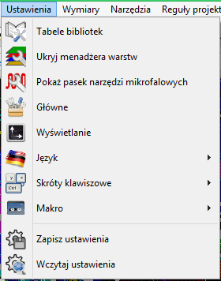
Pozwala na:
- Wybór dostêpnych bibliotek footprintów.
- Ukrywa/Pokazuje mened¿era warstw (Gdzie mo¿na zdefiniowaæ kolor dla danej warstwy lub te¿ dla innych specyficznych elementów. Z pomoc± tego narzêdzia, mo¿na równie¿ aktywowaæ lub dezaktywowaæ wy¶wietlanie pewnych elementów).
- Ukrywa/Pokazuje pasek narzêdzi mikrofalowych do tworzenia specjalistycznych kszta³tów ¶cie¿ek b±d¼ innych elementów, wykorzystywanych w aplikacjach mikrofalowych.
- Zarz±dzanie opcjami g³ównymi (jednostki, itp.).
- Zarz±dzaæ innymi opcjami wy¶wietlania.
- Tworzyæ, modyfikowaæ (oraz odczytywaæ ponownie) plik z list± skrótów klawiszowych.
Menu Wymiary
Jest to bardzo wa¿ne menu.
Pozwala na dostosowanie:
- Rozmiaru siatki u¿ytkownika.
- Rozmiaru tekstów oraz szeroko¶ci linii podczas rysowania.
- Rozmiarów oraz charakterystyki pól lutowniczych.
- Ustawieñ globalnych zwi±zanych z warstwami masek: Solder Mask oraz Solder Paste.
Menu Regu³y projektowe

Menu Regu³y projektowe zawiera dwa niezmiernie wa¿ne polecenia:
- Polecenie Edytor regu³ projektowych uruchamia specjalne okno dialogowe edytora regu³ projektowych gdzie mo¿na dostosowaæ ustawienia zwi±zane z: podzia³em sieci na klasy, rozmiarem domy¶lnym ¶cie¿ek, stylem przelotek, odleg³o¶ci± miêdzy elementami PCB. Opcje te mog± mieæ zastosowanie globalne jak i szczegó³owe, tylko dla wybranych klas.
- Polecenie Opcje warstw umo¿liwia modyfikacjê ustawieñ zwi±zanych ze stosem warstw (ang. layer stack) PCB: liczbê warstw sygna³owych, aktywacjê lub dezaktywacjê warstw, zmiany nazw warstw sygna³owych.
Widok 3D
Polecenie Widok 3D wywo³uje okno przegl±darki 3D, które wygl±da nastêpuj±co:
Przegl±darka ta umo¿liwia na powiêkszanie oraz obracanie wirtualnej p³ytki w przestrzeni 3D w czasie rzeczywistym.
Menu Pomoc
Umo¿liwia wy¶wietlenie tego pliku pomocy oraz dostarcza informacji o wersji oprogramowania (O programie).
Polecenia zwi±zane z ikonami na g³ównym pasku narzêdzi
Ten pasek narzêdziowy daje bezpo¶redni dostêp do najwa¿niejszych funkcji programu Pcbnew.

| Tworzy nowy projekt obwodu drukowanego. | |
| Otwiera uprzednio zapisany projekt obwodu drukowanego. | |
| Zapisuje projekt obwodu drukowanego. | |
| Wybiera rozmiar strony (pola roboczego) oraz pozwala na modyfikacjê w³a¶ciwo¶ci pliku. | |
| Otwiera edytor footprintów (ModEdit) pozwalaj±cy na podgl±d lub edycjê bibliotek footprintów. | |
| Otwiera przegl±darkê footprintów (ModView) pozwalaj±c± na podgl±d bibliotek footprintów. | |
| Cofa lub przywraca ostatnie edycje (do 10 poziomów) | |
| Wy¶wietla menu z opcjami wydruku. | |
| Wy¶wietla menu z opcjami rysowania schematu. | |
| Przybli¿anie i oddalanie pola roboczego (wzglêdem centralnego punktu ekranu). | |
| Od¶wie¿a ekran oraz automatycznie dopasowuje powiêkszenie. | |
| Wyszukuje footprinty lub teksty. | |
| Operacje zwi±zane z list± sieci (wybór, odczyt, testowanie oraz kompilacja). | |
| Sprawdzanie poprawno¶ci projektu DRC (Design Rule Check): Automatycznie sprawdza poprawno¶æ poprowadzonych ¶cie¿ek (zgodno¶æ z list± sieci i regu³ami). | |
| Tryb Rêcznego lub automatycznego przesuwania footprintów: je¶li ta ikona jest aktywna menu podrêczne prze³±cza siê w tryb pracy z footprintami. | |
| Tryb ¦cie¿ek i autoroutingu: je¶li ta ikona jest aktywna menu podrêczne prze³±cza siê w tryb pracy ze ¶cie¿kami. | |
| Umo¿liwia bezpo¶redni dostêp do autoroutera on-line : FreeRoute | |
| Otwiera okno konsoli skryptów Python |
Panel dodatkowy:
| Wybiera aktywn± warstwê robocz±. | |
| Wybiera aktualnie u¿ywan± szeroko¶æ ¶cie¿ki. | |
| Wybiera aktualnie u¿ywany rozmiar przelotki. | |
| Automatyczna szeroko¶æ ¶cie¿ek: je¶li jest aktywna, podczas tworzenia nowej ¶cie¿ki rozpoczynaj±cej siê na innej ¶cie¿ce, szeroko¶æ tej ¶cie¿ki zostanie ustawiona tak samo jak ¶cie¿ka od której siê zaczyna. | |
| Wybór aktualnego rozmiaru siatki. | |
| Wybór powiêkszenia. |
Polecenia zwi±zane z ikonami na prawym panelu
Ten pasek narzêdzi daje dostêp do podstawowych narzêdzi:
- Wstawiania footprintów, ¶cie¿ek, stref, tekstów...
- Pod¶wietlanie sieci.
- Tworzenie opisów, elementów graficznych...
- Usuwanie elementów.
 |
Zatrzymuje pracê u¿ywanego aktualnie narzêdzia. | |
| Pod¶wietlenie ca³ej sieci do której nale¿y wskazana ¶cie¿ka lub pole lutownicze. | ||
| Pokazuje lokalne po³±czenia wspomagaj±ce (w footprintach lub padach). | ||
| Wstawia footprint z biblioteki na p³ytkê. | ||
| Tworzenie ¶cie¿ek i przelotek. | ||
| Tworzenie wype³nionych stref (pola miedzi). | ||
| Tworzenie stref odciêtych (anty pola miedzi). | ||
| Rysowanie linii na warstwach technicznych (tzn. nie bêd±cych warstwami sygna³owymi). | ||
| Rysowanie okrêgów na warstwach technicznych (tzn. nie bêd±cych warstwami sygna³owymi). | ||
| Rysowanie ³uków lub wycinków okrêgu na warstwach technicznych (tzn. nie bêd±cych warstwami sygna³owymi). | ||
| Wstawianie dowolnego tekstu. | ||
| Rysowanie linii wymiarowych na warstwach technicznych (tzn. nie bêd±cych warstwami sygna³owymi). | ||
| Wstawianie znaczników do sk³adania warstw (wystêpuj± one na wszystkich warstwach). | ||
| Usuwanie elementów wskazywanych przez kursor. Uwaga: Gdy kasowane s± elementy wystêpuj±ce na tej samej pozycji, elementy s± wskazywane zgodnie z ich priorytetem od najmniejszego do najwiêkszego (w odwrotnej kolejno¶ci: ¶cie¿ki, teksty, footprinty). Funkcja Cofnij na górnym pasku narzêdzi pozwala na cofniêcie operacji usuniêcia elementu. |
||
| Ustawianie punktu przesuniêcia dla plików wierceñ oraz po³o¿eñ elementów. | ||
| Ustawienie punktu odniesienia siatki (pocz±tek siatki). U¿yteczne przy edycji i ustawianiu footprintów. Mo¿na go równie¿ ustawiæ z menu Wymiary / Siatka. |
Polecenia zwi±zane z ikonami na lewym panelu
Lewy panel umo¿liwia szybk± zmianê najczê¶ciej u¿ywanych opcji.
 |
Wy³±cza lub w³±cza opcjê bie¿±cego sprawdzania DRC (Design Rule Checking). Ostro¿nie: Gdy DRC jest wy³±czone mo¿na tworzyæ równie¿ b³êdne po³±czenia. |
|
| W³±cza lub wy³±cza wy¶wietlanie siatki (Uwaga: Zbyt ma³a siatka mo¿e nie byæ wy¶wietlana). | ||
| W³±cza lub wy³±cza wy¶wietlanie wspó³rzêdnych polarnych dla wspó³rzêdnych wzglêdnych. | ||
| Prze³±cza pomiêdzy wy¶wietlaniem/wprowadzaniem danych w postaci cali lub milimetrów. | ||
| Zmienia kszta³t kursora. | ||
| Wy¶wietla po³±czenia wspomagaj±ce (nitki wskazuj±ce niedokoñczone po³±czenia pomiêdzy footprintami ). | ||
| Wy¶wietla dynamiczne po³±czenia wspomagaj±ce podczas przesuwania footprintów. | ||
| W³±cza lub wy³±cza automatyczne kasowanie starych ¶cie¿ek. | ||
| Prze³±cza tryb wy¶wietlania stref. |
||
| W³±cza lub wy³±cza wy¶wietlanie punktów lutowniczych w trybie uproszczonym (tyko zarys). | ||
| W³±cza lub wy³±cza wy¶wietlania przelotek w trybie uproszczonym (tylko zarys). | ||
| W³±cza lub wy³±cza wy¶wietlania ¶cie¿ek w trybie uproszczonym (tylko zarys). | ||
| W³±cza lub wy³±cza tryb wysokiego kontrastu. W trybie tym aktywna warstwa jest wy¶wietlana w³asnym kolorem, natomiast reszta warstw jest wy¶wietlana w odcieniach szaro¶ci. Tryb taki jest zwykle u¿ywany w obwodach wielowarstwowych. | ||
| W³±cza lub wy³±cza boczny panel z mened¿erem warstw. | ||
| W³±cza lub wy³±cza dodatkowy pasek narzêdzi mikrofalowych (Narzêdzie to nie jest jeszcze skoñczone). |
Menu podrêczne i szybka edycja elementów na PCB
Klikniêcie prawym klawiszem przywo³uje menu podrêczne, którego zawarto¶æ zale¿na jest od elementu nad jakim obecnie znajduje siê kursor. Menu to daje natychmiastowy dostêp do:
- Zmiany wy¶wietlania obszaru roboczego (centrowanie widoku wokó³ kursora, przybli¿ania lub oddalania widoku oraz wyboru powiêkszenia z listy).
- Ustawiania rozmiaru siatki.
- Podstawowych narzêdzi stosowanych dla elementu znajduj±cego siê w miejscu kursora.
Poni¿sze zrzuty ekranowe ukazuj± jak zachowywaæ siê bêdzie menu podrêczne w ró¿nych trybach pracy Pcbnew.
Tryby pracy
Pcbnew posiada trzy podstawowe tryby pracy, które mo¿na wybraæ z poziomu g³ównego paska narzêdzi.
| Tryb Normalny | |
| Tryb Rêcznego lub automatycznego przesuwania footprintów | |
| Tryb ¦cie¿ek i autoroutingu |
W menu podrêcznym tryby wyszczególnione powy¿ej powoduj± zmiany w wy¶wietlaniu niektórych poleceñ.
Praca normalna
| 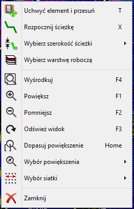 | Menu podrêczne bez wyboru elementu |
 |
Menu podrêczne przy ¶cie¿ce |
 |
Menu podrêczne przy module |
Tryb Automatycznego lub rêcznego przesuwanie footprintów
Te samo menu przy w³±czonym trybie Rêcznego lub Automatycznego przesuwania footprintów ( aktywna).
aktywna).
 |
Menu podrêczne bez wyboru elementu |
| Menu podrêczne przy ¶cie¿ce | |
| 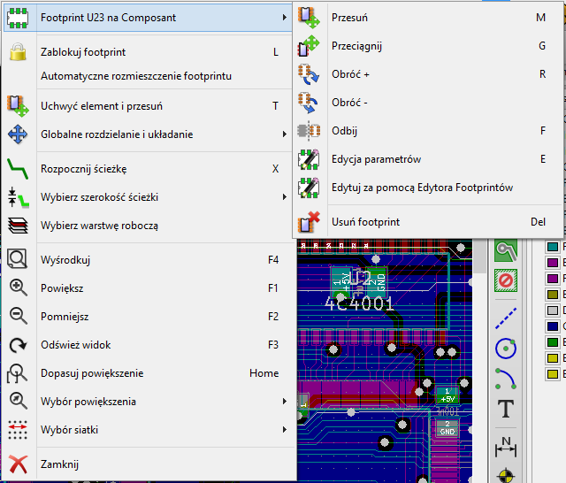 | Menu podrêczne przy module |
Tryb ¦cie¿ek i autoroutingu
To samo przy trybie ¦cie¿ek i autoroutingu ( aktywna).
aktywna).
| Menu podrêczne bez wyboru elementu | |
 |
Menu podrêczne przy ¶cie¿kach |
| 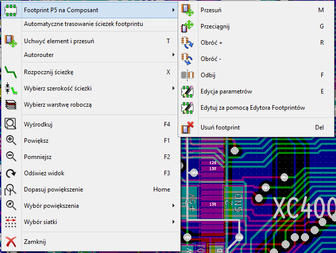 | Menu podrêczne przy module |
4. Implementacja schematu na obwodzie drukowanym
Po³±czenie schematu z obwodem drukowanym
Schemat jest ³±czony z Pcbnew z pomoc± pliku listy sieci, która normalnie jest tworzona przez program do edycji schematów.
Uwaga:
Pcbnew akceptuje listy sieci w formatach Eeschema lub ORCAD PCB 2.
Lista sieci jaka jest generowana przez program do edycji schematu jest zwykle niekompletna, gdy¿ nie ma w niej zawartej informacji o footprintach jakie bêd± posiadaæ poszczególne komponenty na PCB. W konsekwencji potrzebny jest plik po¶redni, który zawiera³ bêdzie odpowiednie po³±czenia pomiêdzy komponentami a ich footprintami.
Do tego celu s³u¿y program CvPcb, który mo¿e generowaæ pliki *.cmp. Program ten uaktualnia tak¿e listê sieci u¿ywaj±c informacji o powi±zaniach footprintów.
CvPcb mo¿e równie¿ tworzyæ pliki numeracji wstecznej *.stf, które mog± byæ ponownie wczytane do schematu w celu zmodyfikowania pola Obudowa w ka¿dym z komponentów, skracaj±c tym samym czas potrzebny na wype³nianie tego pola przy edycji schematu.
W programie Eeschema podczas kopiowania komponentów, kopiowane s± równie¿ informacje zawarte w tym polu, a oznaczenia zostaj± przywrócone do stanu sprzed numeracji dla pó¼niejszego procesu auto-numeracji przyrostowej.
Pcbnew odczytuje zmodyfikowane pliki listy sieci *.net oraz, je¶li istniej±, pliki *.cmp.
W przypadku zmiany footprintów bezpo¶rednio w Pcbnew, plik *.cmp jest automatycznie uaktualniany co pozwala unikn±æ ponownego uruchamiania programu CvPcb.
Poni¿ej znajduje siê tzw. flow chart który schematycznie ukazuje powi±zania pomiêdzy generowanymi plikami, a aplikacjami KiCad EDA Suite.

Procedura tworzenia podstaw obwodu drukowanego
Po stworzeniu potrzebnego schematu by rozpocz±æ pracê nad odwodem drukowanym nale¿y:
- Stworzyæ listê sieci u¿ywaj±c Eeschema.
- Przypisaæ z pomoc± CvPcb ka¿demu komponentowi znajduj±cemu siê na li¶cie sieci wygenerowanej przez Eeschema odpowiedni footprint, który bêdzie go reprezentowa³ na PCB.
- Uruchomiæ Pcbnew oraz odczytaæ zmodyfikowan± listê sieci (to spowoduje równie¿ odczyt danych o footprintach).
Pcbnew po tych operacjach automatycznie za³aduje wskazane footprinty. footprinty te bêdzie mo¿na porozmieszczaæ na obwodzie drukowanym manualnie lub automatycznie, a pó¼niej wytrasowaæ ³±cz±ce je ¶cie¿ki.
Procedura aktualizacji obwodu drukowanego
Gdy schemat zosta³ zmieniony, nale¿y ponownie wykonaæ nastêpuj±ce kroki:
- Utworzyæ now± listê sieci u¿ywaj±c programu Eeschema.
- Je¶li zmiany na schemacie spowodowa³y dodanie nowych komponentów, nale¿y im przypisaæ footprinty u¿ywaj±c programu CvPcb.
- Uruchomiæ Pcbnew i ponownie za³adowaæ zmodyfikowan± listê sieci (to spowoduje równie¿ ponowne za³adowanie fragmentu pliku z wyborem footprintów).
Po wykonaniu tych kroków Pcbnew za³aduje automatycznie wszystkie nowe footprinty, doda nowe po³±czenia z listy sieci oraz usunie niepotrzebne ju¿ po³±czenia.
Odczytywanie listy sieci - £adowanie footprintów - Opcje
Okno obs³ugi listy sieci
Okno to jest dostêpne za pomoc± polecenia ukrytego pod ikon± 

Dostêpne opcje
| Wybierz footprint bior±c pod uwagê | Opcje przydatne podczas ponownego wczytywania zmodyfikowanej listy sieci. Mo¿na wybraæ czy Pcbnew bêdzie siê pos³ugiwa³ oznaczeniami lub znacznikami czasowymi. Korzystaj±c z pierwszej opcji w przypadku gdy na schemacie zosta³a zmieniona numeracja elementów to Pcbnew mo¿e ponownie za³adowaæ ju¿ istniej±ce footprinty jako nowe. Druga opcja pozwala tego unikn±æ, gdy¿ istniej±ce footprinty posiadaj±ce unikalny znacznik czasowy nie zostan± za³adowane ponownie i nast±pi tylko zmiana oznaczeñ istniej±cych footprintów. |
| ¬ród³o footprintu | Mo¿na wybraæ, czy nazwy wczytywanych footprintów maj± pochodziæ z wybranej listy sieci, czy z pliku .cmp utworzonego przez CvPcb po wykonaniu przypisañ footprintów. |
| Bie¿±ce footprinty | Je¶li footprint zosta³ zmieniony na li¶cie sieci to przy wczytywaniu listy sieci mo¿na wybraæ, czy Pcbnew ma zachowaæ poprzedni footprint lub zamieniæ go na nowy. |
| Niepo³±czone ¶cie¿ki | Pozwala wybraæ, czy poprzednio wykonane ¶cie¿ki nie pasuj±ce ju¿ do nowej listy sieci maj± zostaæ usuniête. |
| Dodatkowe footprinty | W³±cza lub wy³±cza usuwanie footprintów które pozosta³y na p³ytce, lecz nie ma ich na li¶cie sieci. Uwaga! Footprinty z atrybutem Zablokowane nie zostan± usuniête. |
| Nazwy sieci z niepo³±czonych pól | Pozwala na usuniêcie lub pozostawienie nazw sieci z pól lutowniczych, które pomimo i¿ istniej± na li¶cie sieci nie s± z niczym innym po³±czone. Uwaga! Eeschema dla ka¿dego pinu zawsze tworzy nazwê sieci, by Pcbnew móg³ lepiej wykrywaæ niedopasowania footprintów. |
Wszystkie operacje jakie s± wykonywane w trakcie wczytywania listy sieci s± wykonywane na bie¿±co i zapisywane w oknie wiadomo¶ci. Gdyby zaistnia³a potrzeba sprawdzenia wszystkich operacji przed ich wykonaniem, to okno dialogowe umo¿liwia wy³±czenie zmian a pozostawienie tylko mo¿liwo¶ci ich zapisania w oknie wiadomo¶ci lub do pliku. Wystarczy zaznaczyæ opcjê Tryb bezpieczny (Poka¿ tylko raport w oknie wiadomo¶ci nie modyfikuj±c p³ytki).
Je¶li chcieliby¶my dodatkowo odfiltrowaæ wy¶wietlane wiadomo¶ci, tak by pokazywane by³y tylko ostrze¿enia b±d¼ napotkane b³êdy, to mo¿na odznaczyæ opcjê Poka¿ wszystkie wiadomo¶ci. Wtedy raport zostanie skrócony tylko do wiadomo¶ci wymagaj±cych szczególnej uwagi.

Opcja Nie potwierdzaj pozwala na wy³±czenie pokazywania dodatkowych okien dialogowych, wymagaj±cych potwierdzenia wykonywanej operacji. U¿ywanie tej opcji wymaga wiêkszej ostro¿no¶ci, gdy¿ wszelkie zmiany bêd± siê odbywaæ bez uprzedzenia.
£adowanie nowych footprintów
Gdy na li¶cie sieci zostan± odnalezione nowe footprinty, zostan± one automatycznie za³adowane:

Domy¶lnie zostan± one umieszczone na stosie na pozycji 0,0, z którego mo¿na je przesun±æ w inne miejsca jeden po drugim. Jednak lepszym rozwi±zaniem jest ich automatyczne przeniesienie i roz³o¿enie. W tym celu wymagane bêd±:
- Aktywacja trybu Automatycznego przesuwania footprintów
 |
Ikona s³u¿±ca do tego celu znajduje siê na g³ównym pasku narzêdziowym (druga z prawej). |
| Je¶li ikona ma tak± postaæ, oznacza to aktywn± opcjê. |
- Przesuniêcie kursora myszy w puste pole na obszarze roboczym i wywo³anie podrêcznego menu:
- Z tego menu mo¿na wybraæ jedno z dwóch poleceñ:
- Przesuñ wszystkie footprinty je¶li istnieje ju¿ obrys p³ytki ze znajduj±cymi siê na niej footprintami.
- Przesuñ nowe footprinty, je¶li operacja rozmieszczenia footprintów uruchamiana jest po raz pierwszy (tworzymy nowy obwód drukowany)
Poni¿ej mo¿na zobaczyæ przyk³ad dzia³ania pierwszego z tych poleceñ:

5. Ustawianie i wy¶wietlanie warstw roboczych
Pcbnew mo¿e pracowaæ na 28 ro¿nych warstwach:
- 16 warstw miedzi (przeznaczonych do prowadzenia ¶cie¿ek).
- 16 dodatkowych warstw technicznych.
Mo¿na ustawiaæ liczbê dostêpnych warstw miedzi, oraz (je¶li trzeba) nadawaæ im nazwy lub atrybuty. Mo¿na równie¿ wy³±czaæ nieu¿ywane warstwy techniczne.
Warstwy sygna³owe (miedzi)
Informacje podstawowe
Warstwy sygna³owe to warstwy u¿ywane miêdzy innymi przez auto-router do prowadzenia ¶cie¿ek sygna³owych. Warstwa L1 to najni¿ej usytuowana warstwa miedzi (popularnie zwana warstw± lutowania, dolna) w stosie warstw. Warstwa L16 to najwy¿ej usytuowana warstwa (popularnie zwana warstw± elementów, górna) w stosie warstw. Inne warstwy miedzi w stosie s± warstwami wewnêtrznymi (warstwy L2 do L15).
Wybór ilo¶ci warstw sygna³owych
By pomóc w nawigacji pomiêdzy warstwami, niezbêdne jest wcze¶niejsze ustalenie liczby warstw roboczych. Do tego celu s³u¿y polecenie Regu³y projektowe / Opcje warstw.
Z rozwijanej listy Warstwy ¶cie¿ek mo¿na wybraæ potrzebn± ilo¶æ warstw (2 do 16). Mo¿na równie¿ skorzystaæ z listy Domy¶lne ustawienia warstw by wybraæ jedn± z predefiniowanych opcji warstw.
W grupie Warstwy mo¿na sprawdziæ bie¿±c± zawarto¶æ stosu warstw, ustaliæ nazwy warstw lub nadawaæ atrybuty, a tak¿e w³±czaæ lub wy³±czaæ warstwy.
Warstwy sygna³owe (miedzi)
Warstwom sygna³owym (miedzi) mo¿na dodatkowo nadawaæ nazwy w³asne. Warstwy miedzi posiadaj± równie¿ atrybuty u¿ywane przez zewnêtrzny router on-line: FreeRouter.
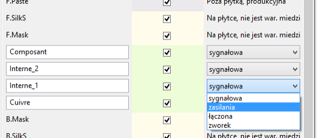
Uwaga:
O ile stosowanie narodowych znaków w nazwach warstw jest dozwolone i program Pcbnew bêdzie je poprawnie obs³ugiwa³, to przy planowanym wykorzystaniu FreeRoute w nazwach nale¿y unikaæ stosowania znaków narodowych, gdy¿ nie s± one przez ten router akceptowane.
Warstwy techniczne
Niektóre warstwy s± ³±czone w pary, niektóre za¶ nie. Gdy pojawiaj± siê one jako para, wp³ywa to na zachowanie footprintów podczas wstawiania ich na p³ytkê. Elementy sk³adaj±ce siê na footprint (pola lutownicze, obrysy i tekst) znajduj±ce siê na poszczególnych warstwach (po stronie lutowania lub elementów) pojawiaj± siê na odpowiednich warstwach uzupe³niaj±cych w przypadku zmiany po³o¿enia footprintu (zmiana strony).
Pary warstw technicznych
| Warstwy kleju (Adhes, po stronie lutowania i elementów): | Warstwy te s± u¿ywane przy mocowaniu elementów SMD za pomoc± kleju w przypadku obwodów drukowanych, których monta¿ odbywa siê przez lutowanie na fali (wave soldering). |
| Warstwy masek pasty lutowniczej (Paste) dla elementów SMD (po stronie lutowania i elementów): | U¿ywane do produkcji masek pozwalaj±cych aplikowaæ pastê lutownicz± wy³±cznie na polach lutowniczych przeznaczonych dla elementów montowanych powierzchniowo, z regu³y przed lutowaniem strumieniem gor±cego powietrza lub w piecach lutowniczych (reflow soldering). Teoretycznie tylko elementy montowane powierzchniowo zajmuj± te warstwy. |
| Warstwy opisowe (SilkS, po stronie lutowania i elementów): | Warstwy te u¿ywane s± do rysowania opisów elementów (nazwy oznaczeñ lub te¿ warto¶ci) czy obrysów elementów znajduj±cych siê na p³ytkach. |
| Warstwy masek cynowania (Mask, po stronie lutowania i elementów): | Definiuj± one maski wykorzystywane przy wstêpnym cynowaniu PCB. Normalnie wszystkie pola lutownicze jakie znajduj± siê na jednej lub drugiej z tych warstw (lub zarówno przez obie dla elementów przewlekanych) s± maskowane, aby zapobiegaæ przykryciu ich lakierem (zwanym popularnie soldermask±) w koñcowym procesie produkcyjnym. |
Warstwy dla w³asnego u¿ytku
| Cmts.User | Warstwa przeznaczona na komentarze u¿ytkownika |
| Eco1.User Eco2.User |
Warstwa przeznaczona na komentarze dla wytwórcy PCB |
| Dwgs.User | Warstwa przeznaczona na rysunki u¿ytkownika |
Warstwy te mo¿na u¿ywaæ swobodnie. Mo¿na na nich przyk³adowo umieszczaæ teksty instrukcji dla monta¿ystów lub z opisem po³±czeñ, albo te¿ rysunki konstrukcyjne.
Warstwy specjalne
Program Pcbnew dysponuje jedn± warstw± specjaln±. Jest ni± warstwa Edge.Cuts. Warstwa ta jest zarezerwowana dla graficznego opisu obramowania p³ytki (wykorzystywanego równie¿ jako linia ciêcia). Dowolny element (grafika, tekst, element pozycjonuj±cy...) umieszczony na tej warstwie zostanie przeniesiony na pozosta³e warstwy.
Wybór aktywnej warstwy
Wybór aktualnie aktywnej warstwy mo¿e byæ przeprowadzony na kilka sposobów:
- U¿ywaj±c prawego panelu warstw (Mened¿er warstw).
- U¿ywaj±c listy rozwijanej na górnym pasku narzêdzi.
- U¿ywaj±c menu podrêcznego (wywo³ywanego prawym klawiszem myszy).
- U¿ywaj±c klawiszy klawiatury + oraz - (dzia³a tylko w przypadku warstw sygna³owych).
- U¿ywaj±c klawiszy skrótów.
Wybór z pomoc± Mened¿era warstw
Mened¿er warstw pozwala tak¿e na zmianê kolorystyki warstw oraz w³±cza lub wy³±cza ich widoczno¶æ.
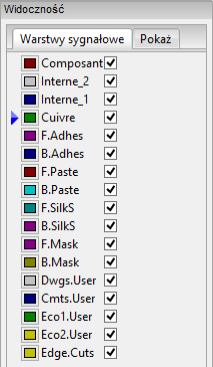
Wybór z pomoc± dodatkowego paska narzêdzi
Za pomoc± tej listy mo¿na bezpo¶rednio wybraæ warstwê robocz±. Oprócz tego lista ta wy¶wietla dodatkowo skróty klawiszowe przypisane niektórym warstwom.
Wybór z menu podrêcznego
W przypadku wywo³ania menu podrêcznego mo¿na wybraæ aktywn± warstwê korzystaj±c z polecenia Wybierz warstwê robocz±. Po wybraniu poka¿e siê dodatkowe okno:
Wybór warstw dla stawiania przelotek
W przypadku pracy w trybie ¦cie¿ek i autoroutingu, (aktywna jest ikona na g³ównym pasku narzêdzi), menu podrêczne dostarcza dodatkowych opcji zwi±zanych z wyborem pary warstw, na której stawiane bêd± przelotki:
Po wybraniu polecenia Wybierz parê warstw, otworzy siê dodatkowe okno, gdzie bêdzie mo¿na przypisaæ wirtualnym warstwom Górnej i Dolnej odpowiednie warstwy sygna³owe, które bêd± ³±czone za pomoc± przelotek.
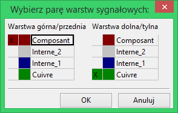
Przy umieszczaniu przelotki na warstwie roboczej (aktywnej), warstwa ta zostaje automatycznie prze³±czona na jej alternatywn± warstwê w wybranej wcze¶niej parze warstw dla przelotek. Przelotki s± równie¿ wstawiane automatycznie podczas trasowania ¶cie¿ek, gdy nast±pi zmiana warstwy roboczej za pomoc± klawiszy skrótów.
U¿ywanie trybu wysokiego kontrastu
Tryb ten jest w³±czany za pomoc± ikony  (na lewym panelu opcji). W trybie tym, aktywna warstwa jest wy¶wietlana swoim w³asnym kolorem, natomiast pozosta³e warstwy s± wy¶wietlane w odcieniach szaro¶ci.
(na lewym panelu opcji). W trybie tym, aktywna warstwa jest wy¶wietlana swoim w³asnym kolorem, natomiast pozosta³e warstwy s± wy¶wietlane w odcieniach szaro¶ci.
Warstwy miedzi w trybie wysokiego kontrastu
W przypadku u¿ywania wiêcej ni¿ czterech warstw roboczych, opcja ta pozwala u¿ytkownikowi lepiej zorientowaæ siê, która warstwa jest w danej chwili aktywna.
Tryb pracy normalnej (aktywna jest warstwa L1):
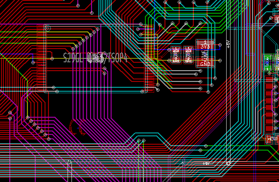
Tryb pracy z wysokim kontrastem (aktywna jest warstwa L1):
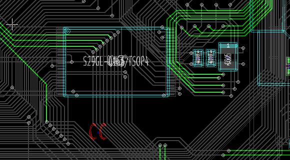
Warstwy techniczne
Inaczej wygl±da sprawa trybu wysokiego kontrastu w przypadku gdy chcieliby¶my podejrzeæ zawarto¶æ warstw maskuj±cych (np. pasty lutowniczej lub maski cynowania), które normalnie nie s± wy¶wietlane gdy¿ przykrywaj± je warstwy sygna³owe. W trybie wysokiego kontrastu zmienia siê wtedy sposób wy¶wietlania pól lutowniczych:
Tryb normalny (aktywna warstwa soldermaski na stronie górnej):

Tryb wysokiego kontrastu (aktywna warstwa maski cynowania na stronie górnej):
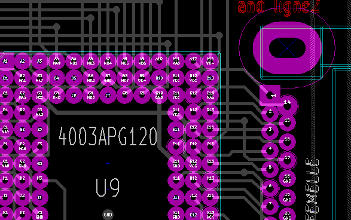
Przy aktywacji trybu wysokiego kontrastu warstwy masek s± wy¶wietlane, zatem mo¿na w ³atwy sposób dokonaæ wstêpnego sprawdzenia ich rozmiarów.
6. Tworzenie i modyfikacja projektu obwodu drukowanego
Tworzenie p³ytki
Rysowanie obrysu p³ytki
Dobrym pomys³em jest rozpoczêcie tworzenia p³ytki z obwodem drukowanym od zdefiniowania jej obrysu. Obrys p³ytki jest zwykle rysowany za pomoc± kilku segmentów linii.
By taki obrys narysowaæ w programie Pcbnew nale¿y wybraæ najpierw warstwê Krawêdziowa jako aktywn± warstwê oraz u¿yæ polecenia Dodaj liniê lub wielok±t by narysowaæ poszczególne odcinki wielok±ta klikaj±c w kolejnych naro¿nikach, a nastêpnie klikaj±c dwukrotnie by zakoñczyæ obrys.
P³ytki zwykle maj± bardzo precyzyjnie ustalone wymiary, dlatego przy rysowaniu obrysu mo¿e byæ konieczne pos³ugiwanie siê informacjami o po³o¿eniu kursora na pasku statusu. Pomocny mo¿e staæ siê mechanizm wspó³rzêdnych wzglêdnych, których punkt zerowy mo¿na dowolnie przestawiaæ. Zmianê jednostek w jakich s± wy¶wietlane informacje na pasku statusu mo¿na przeprowadziæ za pomoc± klawisza skrótu Alt-U.
Nic nie stoi tak¿e na przeszkodzie by w obrysie p³ytki zawrzeæ równie¿ krzywe : okrêgi lub ³uki :
- Wybraæ jedno z dostêpnych narzêdzi Dodaj okr±g lub Dodaj ³uk.
- Klikn±æ w miejscu gdzie ma znale¼æ siê ¶rodek okrêgu lub ³uku.
- Poruszaj±c mysz± ustawiæ odpowiedni promieñ.
- Zakoñczyæ rysowanie klikaj±c ponownie.
Uwaga:
Szeroko¶æ linii stanowi±cej obrys mo¿e zostaæ zmieniona w menu Ustawienia (zalecana szeroko¶æ to 15 milsów) lub za pomoc± jej w³a¶ciwo¶ci, ale zmiana mo¿e nie byæ widoczna do czasu prze³±czenia widoku na widok pe³ny.
Przyk³adowy rezultat mo¿e wygl±daæ tak:

Odczytywanie listy sieci stworzonej na podstawie schematu
By wczytaæ listê sieci nale¿y wybraæ ikonê  na g³ównym pasku narzêdzi. Otworzy siê nastêpuj±ce okno dialogowe:
na g³ównym pasku narzêdzi. Otworzy siê nastêpuj±ce okno dialogowe:
Je¶li pole z nazw± pliku listy sieci (¶cie¿k±) w tym oknie nie jest poprawne, nale¿y u¿yæ przycisku Przegl±daj obok tego pola aby znale¼æ poprawn± listê sieci. Po tym nale¿y u¿yæ przycisku Wczytaj bie¿±c± listê sieci by program odczyta³ zawarto¶æ wybranego pliku. Footprinty które nie zosta³y jeszcze za³adowane, zostan± wczytane i umieszczone w jednym miejscu (pó¼niej poznamy metody ich automatycznego uk³adania).

Je¶li ¿aden footprint jeszcze nie zosta³ ustawiony, wszystkie footprinty pojawi± siê w jednym miejscu, co mo¿e nieco przeszkadzaæ w rozpoznaniu ka¿dego z nich. Mo¿na jednak je wstêpnie roz³o¿yæ u¿ywaj±c polecenia Przesuñ wszystkie footprinty dostêpnego z menu podrêcznego. Poni¿ej znajduje siê fragment obszaru roboczego po wykonaniu tego polecenia:

Wa¿na informacja:
Je¶li p³ytka zostanie zmodyfikowana przez zamianê istniej±cych footprintów na nowe przez CvPcb (na przyk³ad przy zamianie rezystorów o mocy 0.25W na wiêksze 0.5W), bêdzie wymagane skasowanie istniej±cych elementów przed za³adowaniem przez Pcbnew footprintów zastêpczych. Jednak¿e, je¶li footprint ma zostaæ zamieniony przez istniej±cy footprint, ³atwiej jest wykonaæ to u¿ywaj±c okna z w³a¶ciwo¶ciami footprintów, dostêpnego z menu podrêcznego.
Poprawianie p³ytki
Bardzo czêsto niezbêdne jest poprawienie p³ytki po dokonaniu zmian na schemacie. Aby poprawki te przenie¶æ równie¿ na p³ytkê nale¿y :
- Stworzyæ now± listê sieci na podstawie zmodyfikowanego schematu.
- Je¶li zosta³ dodany choæby jeden nowy element, nale¿y mu przypisaæ footprint za pomoc± CvPcb.
- Na koniec wczytaæ now± listê sieci w programie Pcbnew.
Usuwanie nieprawid³owych ¶cie¿ek
Pcbnew umo¿liwia automatyczne skasowanie nieprawid³owych ¶cie¿ek, które mog³yby pozostaæ po zmianach. By tak± mo¿liwo¶æ w³±czyæ nale¿y w oknie zaznaczyæ opcjê Usuñ w grupie Niepo³±czone ¶cie¿ki:
Mo¿na równie¿ dokonaæ modyfikacji tych ¶cie¿ek manualnie (funkcja DRC pozwala na zidentyfikowanie takich ¶cie¿ek).
Usuwanie nadmiarowych elementów
Pcbnew mo¿e równie¿ usun±æ footprinty, które po zmianach na schemacie nie posiadaj± swojego odzwierciedlenia na li¶cie sieci. Operacja ta jest opcjonalna i domy¶lnie wy³±czona. Opcja ta jest przydatna gdy na p³ytce zostan± dodane z poziomu Pcbnew dodatkowe footprinty (np. otwory monta¿owe pod ¶ruby mocuj±ce), które nie maj± swoich odpowiedników na schemacie.
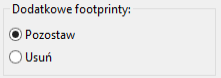
Je¶li opcja Dodatkowe footprinty zostanie prze³±czona w tryb Usuñ, footprinty nie odpowiadaj±ce elementom z listy sieci zostan± usuniête, chyba, ¿e dla takich footprintów zostanie zaznaczona opcja Zablokowany we w³a¶ciwo¶ciach footprintu.
| 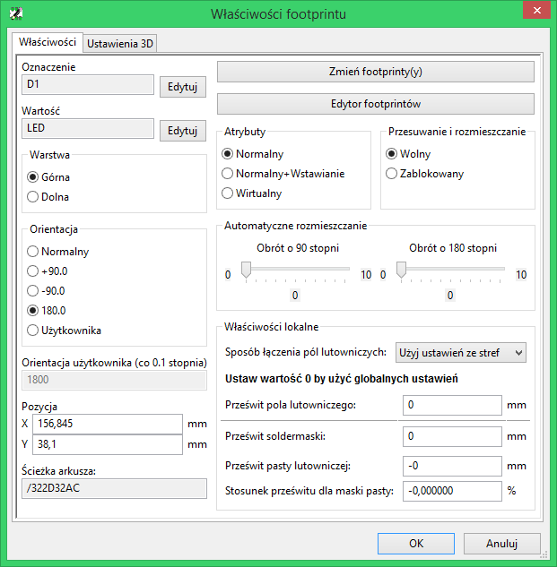 | Opcja zwi±zana z blokowaniem footprintów. |
Ogólnie dobrym nawykiem jest aktywacja powy¿szej w³a¶ciwo¶ci dla wszystkich footprintów stanowi±cych tylko elementy "mechaniczne".
Modyfikacja footprintów
Je¶li footprint zosta³ zmodyfikowany na li¶cie sieci (przez program CvPcb) i taki footprint jest ju¿ umieszczony na p³ytce, to nie bêdzie on modyfikowany przez Pcbnew, chyba, ¿e opcja zamiany footprintów w oknie listy sieci bêdzie aktywna :
Zmiany footprintów (na przyk³ad rezystorów o innych rozmiarach) mo¿e byæ te¿ wykonana bezpo¶rednio poprzez edycjê w³a¶ciwo¶ci footprintu lub masow± zamianê poprzez polecenie Zamieñ footprint(y) dostêpne w oknie w³a¶ciwo¶ci footprintów.
Opcje zaawansowane - wybór odcisków czasowych zamiast oznaczeñ
Czasami oznaczenia na schemacie ulegaj± zmianie bez ¿adnych istotnych zmian w obwodzie drukowanym (dotyczy to samych oznaczeñ - przyk³adowo z R5 na R6, U4 na U3...). PCB w takim przypadku pozostaje bez zmian (z wyj±tkiem ewentualnie warstwy opisowej). Niemniej jednak wewnêtrznie (na li¶cie po³±czeñ), komponenty i footprinty s± reprezentowane za pomoc± ich oznaczeñ.
W tej sytuacji pomocne mo¿e staæ siê zaznaczenie opcji Znacznik czasowy w grupie Wybierz footprint bior±c pod uwagê przed ponownym odczytaniem listy sieci :
Z pomoc± tej opcji, Pcbnew podczas wczytywania listy sieci identyfikuje footprinty nie przez ich nadane im oznaczenia, ale przez odcisk czasowy nadawany im podczas wstawiania symboli na schemacie i który przenoszony jest przez CvPcb na footprinty. Odcisk czasowy jest automatycznie generowany przez Eeschema i zawiera w sobie zakodowan± datê oraz czas umieszczenia symbolu na schemacie.
Stosuj±c t± opcjê nale¿y zachowaæ dodatkowe ¶rodki ostro¿no¶ci! (najlepiej wcze¶niej zapisaæ plik z projektem PCB).
Wynika to z tego, ¿e zastosowana technika nieco siê komplikuje w przypadku elementów zawieraj±cych wiele elementów sk³adowych (np. 7400 ma 4 takie same czê¶ci i jedn± wspóln± obudowê). W tej sytuacji, odcisk czasowy nie jest jednoznacznie okre¶lony (w 7400 nie bêdzie czterech odcisków - po jednym dla ka¿dej czê¶ci). Niemniej jednak, opcja odcisków czasowych zazwyczaj rozwi±zuje problemy przy ponownie wykonanej numeracji schematu.
B³yskawiczna zamiana footprintów umieszczonych na p³ytce
B³yskawiczna zamiana footprintu (lub kilku identycznych footprintów) na nowe footprinty jest czêsto bardzo u¿yteczna. Ca³y proces jest bardzo prosty.
Nale¿y klikn±æ na footprint jaki chcemy zmieniæ by otworzyæ okno z w³a¶ciwo¶ciami footprintu oraz nacisn±æ klawisz Zamieñ footprint(y) by otworzyæ dodatkowe okno.
 |
Dostêp do polecenia Zmieñ footprint(y) |
| Opcje zwi±zane z zamian± footprintów |
Aby zmieniæ footprint na inny, nale¿y podaæ nazwê nowego footprintu. Mo¿na j± wpisaæ rêcznie lub wybraæ z listy dostêpnych footprintów (klawisz Przegl±daj) budowanej na podstawie zawarto¶ci bibliotek.
Przy zmianach footprintów dostêpne s± dodatkowe opcje :
- Zamieñ footprint by zmieniæ tylko bie¿±cy footprint.
- Zamieñ te same footprinty by dokonaæ zmian dla wszystkich footprintów takich samych jak bie¿±cy footprint.
- Zamieñ te same footprinty+warto¶æ by dokonaæ zmian dla wszystkich footprintów takich samych jak bie¿±cy footprint, ale pomijaj±c te które posiadaj± inn± warto¶æ.
Uwaga:
Zamieñ wszystkie powoduje ponowne za³adowanie wszystkich footprintów na p³ytce.
7. Rozmieszczanie footprintów
Wspomaganie rozmieszczania footprintów
Podczas przesuwania footprintów, mo¿na wy¶wietliæ tzw. ratsnets (czyli linie wspomagaj±ce pokazuj±ce po³±czenia), które wspomagaj± proces ustawiania elementów. By w³±czyæ t± funkcjê nale¿y klikn±æ i aktywowaæ ikonê  znajduj±c± siê na lewym pasku narzêdzi.
znajduj±c± siê na lewym pasku narzêdzi.
Rozmieszczanie manualne
Footprinty mo¿na przemieszczaæ manualnie. Aby to zrobiæ, nale¿y wybraæ footprint z pomoc± prawego przycisku myszy, a nastêpnie wybraæ polecenie Przesuñ z menu podrêcznego. Potem korzystaj±c z myszy przesun±æ footprint nad odpowiedni± pozycjê i umie¶ciæ go klikaj±c lewym przyciskiem myszy. W razie potrzeby wybrany footprint mo¿na obracaæ, odwracaæ lub poddawaæ edycji. Aby przerwaæ operacjê nale¿y wybraæ z menu podrêcznego polecenie Anuluj (lub nacisn±æ klawisz Esc).

Na powy¿szym obrazku mo¿na zobaczyæ footprint z aktywnymi liniami wspomagaj±cymi podczas jego przesuwania. Uk³ad elementów po rozmieszczeniu footprintów mo¿e wygl±daæ w ten sposób:

Reorientacja footprintów
Pocz±tkowo wszystkie footprinty dziedzicz± t± sam± orientacjê jak± posiadaj± jako elementy biblioteczne (normalnie 0). Je¶li zachodzi potrzeba reorientacji dla poszczególnych footprintów, albo wszystkich footprintów (przyk³adowo wszystkie u³o¿one pionowo) nale¿y u¿yæ opcji Globalne przesuwanie i umieszczanie / Zorientuj wszystkie footprinty. Proces reorientacji mo¿e byæ wykonany równie¿ tylko dla wybranej grupy elementów; na przyk³ad tylko dla tych footprintów, których oznaczenia rozpoczynaj± siê od IC.
Automatyczne przesuwanie footprintów
Generalnie, footprinty mog± byæ przesuwane tylko je¶li nie zosta³y zablokowane. Atrybut ten mo¿e zostaæ wy³±czony lub w³±czony z podrêcznego menu, jakie rozwija siê gdy nad footprintem zostanie u¿yty prawy klawisz myszy, podczas trybu automatycznego przesuwania footprintów lub z pomoc± W³a¶ciwo¶ci footprintu.
Jak wspomniano w poprzednim rozdziale, nowe footprinty za³adowane podczas odczytywania listy sieci zostan± umieszczone w jednym miejscu na p³ytce. Pcbnew jednak udostêpnia narzêdzia do automatycznego rozmieszczenia footprintów, co u³atwi proces wyboru i ustawiania footprintów.
Narzêdzia zwi±zane z rozmieszczaniem footprintów stan± siê aktywne po wybraniu trybu Automatycznego przesuwania footprintów (Ikona  na g³ównym pasku narzêdzi). W tym trybie podrêczne menu bêdzie wygl±daæ dwojako. Gdy w miejscu gdzie znajduje siê kursor znajduje siê jaki¶ footprint, menu to bêdzie mia³o postaæ:
na g³ównym pasku narzêdzi). W tym trybie podrêczne menu bêdzie wygl±daæ dwojako. Gdy w miejscu gdzie znajduje siê kursor znajduje siê jaki¶ footprint, menu to bêdzie mia³o postaæ:
Je¶li pod kursorem nie znajduje siê ¿aden footprint, menu podrêczne ulegnie skróceniu:
W obu przypadkach dostêpne s± nastêpuj±ce polecenia:
- Przesuñ wszystkie footprinty pozwala na automatyczne rozmieszczenie footprintów które nie posiadaj± atrybutu Zablokowany. Polecenie to jest u¿ywane g³ównie po pierwszym wczytaniu listy sieci.
- Przesuñ nowe footprinty pozwala na automatyczne rozmieszczenie footprintów, które jeszcze nie zosta³y umieszczone wewn±trz obrysu PCB. Polecenie to wymaga, by przed jego u¿yciem zosta³ narysowany pocz±tkowy obrys p³ytki, tak by by³o wiadomo jakie footprinty mo¿na automatycznie rozmie¶ciæ.
Automatyczne rozmieszczanie footprintów
Charakterystyka narzêdzia do automatycznego rozmieszczania footprintów
Automatyczne rozmieszczanie footprintów umo¿liwia umieszczenie footprintów na 2 warstwach p³ytki drukowanej (jednak przenoszenie footprintów na doln± warstwê miedzi nie jest automatyczne).
Celem tego narzêdzie jest równie¿ ustalenie najlepszej orientacji footprintów (obrót o 0, 90, -90, 180 stopni).
Rozmieszczanie jest wykonywane zgodnie z algorytmem optymalizuj±cym, który ma na celu zminimalizowanie d³ugo¶ci po³±czeñ wspomagaj±cych i d±¿y do stworzenia przestrzeni pomiêdzy wiêkszymi footprintami posiadaj±cymi wiele pól lutowniczych. Kolejno¶æ rozmieszczania jest zoptymalizowana tak, by pocz±tkowo rozmieszczaæ wiêksze footprinty z wiêksz± ilo¶ci± pól lutowniczych.
Przygotowanie pola edycji
Pcbnew mo¿e rozmie¶ciæ footprinty automatycznie, jednak¿e wymagane jest wspomaganie tego procesu, poniewa¿ ¿adne oprogramowanie nie jest w stanie odgadn±æ co u¿ytkownik chcia³by osi±gn±æ.
Przed wykonaniem automatycznego rozmieszczeni footprintów nale¿y:
- Stworzyæ obrys p³ytki (Mo¿e byæ nawet do¶æ skomplikowany, byle by obrys zosta³ zamkniêty).
- Dokonaæ rêcznego rozmieszczenia kluczowych footprintów b±d¼ elementów (Z³±cz, otworów monta¿owych...).
- Podobnie poszczególne footprinty SMD oraz footprinty krytyczne (na przyk³ad du¿e footprinty) musz± znale¼æ siê na odpowiedniej stronie p³ytki i trzeba to wykonaæ rêcznie.
- Po zakoñczeniu rêcznego rozmieszczenia kluczowych footprintów, footprinty te musz± zostaæ zablokowane by automat ich ju¿ nie przemieszcza³. W trybie automatycznego przesuwania footprintów (ikona
 w stanie aktywnym) nale¿y klikn±æ prawym klawiszem i wybraæ z podrêcznego menu polecenie Zablokuj footprint. Mo¿na to równie¿ wykonaæ z pomoc± okna dialogowego z w³a¶ciwo¶ciami footprintu.
w stanie aktywnym) nale¿y klikn±æ prawym klawiszem i wybraæ z podrêcznego menu polecenie Zablokuj footprint. Mo¿na to równie¿ wykonaæ z pomoc± okna dialogowego z w³a¶ciwo¶ciami footprintu. - Po tym mo¿na ju¿ uruchomiæ proces automatycznego rozmieszczania. W trybie automatycznego przesuwania footprintów, klikn±æ prawym klawiszem i z podrêcznego menu wybraæ polecenie Globalne przesuwanie i rozmieszczanie - a nastêpnie Automatyczne rozmieszczenie wszystkich footprintów.
Podczas automatycznego rozmieszczania footprintów Pcbnew, je¶li zachodzi taka potrzeba, mo¿e dokonywaæ optymalizacji zwi±zanej z reorientacj± footprintów. Jednak¿e obracanie footprintów mo¿e zostaæ wykonane tylko je¶li bêdzie ono dopuszczalne dla danego footprintu (zobacz Edycja w³a¶ciwo¶ci footprintów).
Zwykle, rezystory i kondensatory nie posiadaj±ce polaryzacji pozwalaj± na obrót o 180 stopni. Niektóre footprinty (na przyk³ad ma³e tranzystory) dopuszczaj± obrót o +/- 90 stopni oraz o 180 stopni.
Dla ka¿dego footprintu jeden z suwaków dopuszcza obrót o 90 stopni, a drugi suwak dopuszcza obrót o 180. Ustawienie ich w pozycji 0 uniemo¿liwia obrót, za¶ ustawienie 10 dopuszcza go, a po¶rednia warto¶æ wskazuje mo¿liwo¶æ obrotu w przód / ty³.
Zezwolenie na obrót mo¿e zostaæ ustanowione w trakcie edycji footprintu umieszczonego ju¿ na p³ytce. Jednak zalecane jest, by takie opcje by³y ustalane ju¿ na poziomie elementów bibliotecznych, gdy¿ opcje te mog± byæ dziedziczone za ka¿dym razem kiedy dany footprint bêdzie u¿ywany.
Interaktywno¶æ automatycznego rozmieszczania footprintów
Podczas automatycznego rozmieszczania elementów mo¿e byæ konieczne przerwanie tej operacji (klawiszem Esc) i rêcznego przemieszczenia footprintu. U¿ywaj±c polecenia Automatyczne rozmieszczenie nastêpnego footprintu mo¿na wznowiæ proces automatycznego rozmieszczania z miejsca gdzie zosta³o ono przerwane.
Polecenie Automatyczne rozmieszczenie nowych footprintów pozwalana na automatyczne rozmieszczenie footprintów, które nie zosta³y jeszcze umieszczone wewn±trz obrysu p³ytki. Polecenie to nie przesuwa ju¿ rozmieszczonych footprintów wewn±trz obrysu, niezale¿nie od stanu blokady tych footprintów.
Polecenie Automatyczne rozmieszczenie footprintu powala za¶ na ponowne rozmieszczenie footprintu, który wskazuje kursor myszy, nawet gdy blokada footprintu jest aktywna.
Uwagi koñcowe
Pcbnew automatycznie okre¶la mo¿liwe strefy rozmieszczenia footprintów bior±c pod uwagê równie¿ obrys p³ytki, który niekoniecznie musi byæ prostok±tny (mo¿e byæ okr±g³y lub posiadaæ wyciêcia ...).
Je¶li p³yta nie jest prostok±tna, obrys musi byæ zamkniêty aby Pcbnew mog³o okre¶liæ, co jest w ¶rodku i to, co jest poza obrysem. W ten sam sposób, je¶li na p³ytce wystêpuj± wewnêtrzne wyciêcia, ich obrysy bêd± musia³y byæ równie¿ zamkniête.
Pcbnew oblicza mo¿liwe strefy umieszczenia footprintów za pomoc± obrysu p³ytki, nastêpnie sprawdza ka¿dy footprint po kolei przesuwaj±c go nad tym obszarem w celu ustalenia optymalnej pozycji na której mo¿e go umie¶ciæ.
8. Ustawienia i parametry trasowania ¶cie¿ek
Opcje g³ówne
Opcje g³ówne mo¿na dostosowaæ z pomoc± menu Ustawienia / G³ówne:
Wywo³anie tego polecenia spowoduje wy¶wietlenie okna z ustawieniami, a w nim szereg opcji (Nas w tej chwili interesuj± te w grupie Opcje):
Dla ¶cie¿ek dostêpne s± nastêpuj±ce opcje:
- ¦cie¿ki tylko pod k±tem 45 stopni: Pozwala na prowadzenie ¶cie¿ek tylko pod k±tem 0, 45 lub 90 stopni.
- ¦cie¿ka z podwójnym segmentem: Podczas tworzenia ¶cie¿ek, zostan± wy¶wietlane dwa jej segmenty (je¶li ¶cie¿ka nie jest lini± prost±).
- Automatyczne usuwanie ¶cie¿ek: Podczas tworzenia ¶cie¿ek, stare trasy nowo prowadzonych ¶cie¿ek zostan± automatycznie usuniête.
- Przyci±gaj do pól lutowniczych: Powoduje, ¿e podczas tworzenia ¶cie¿ek kursor bêdzie przyci±gany do pada je¶li pojawi siê w jego obrêbie.
- Przyci±gaj do ¶cie¿ek: Powoduje, ¿e podczas tworzenia ¶cie¿ek kursor bêdzie przyci±gany do za³amañ istniej±cych ¶cie¿ek.
Ustawienia Regu³ projektowych
Dostêp do g³ównego okna regu³ projektowych
Najwa¿niejsze ustawienia regu³ projektowych s± dostêpne z menu Regu³y projektowe:
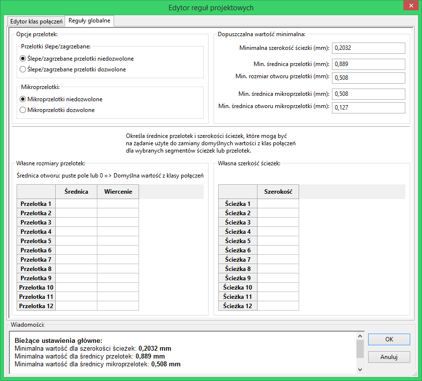
Bie¿±ce ustawienia
Bie¿±ce ustawienia s± wy¶wietlane na pasku narzêdziowym:
Klasy po³±czeñ
Pcbnew pozwala na zdefiniowanie parametrów trasowania ¶cie¿ek dla ka¿dej z sieci. W rzeczywisto¶ci taka funkcjonalno¶æ by³aby k³opotliwa, zatem wprowadzono system grupowania podobnych sieci.
- Grupa podobnych sieci jest zwana klas± po³±czeñ.
- Na li¶cie zawsze musi siê znale¼æ klasa Default.
- U¿ytkownik mo¿e zdefiniowaæ inne klasy po³±czeñ.
Dla pojedynczej klasy mo¿na zdefiniowaæ:
- Szeroko¶æ ¶cie¿ki oraz rozmiar przelotek razem z rozmiarem wierceñ.
- Minimaln± odleg³o¶æ (clearance) jak± nale¿y zachowaæ pomiêdzy polami lutowniczymi i ¶cie¿kami (lub przelotkami).
Podczas trasowania ¶cie¿ek, Pcbnew automatycznie wybiera odpowiedni± klasê po³±czeñ na podstawie nazwy sieci i jej przynale¿no¶ci do klasy, i stosuje ustalone dla danej klasy parametry ¶cie¿ek oraz przelotek.
Ustawianie parametrów trasowanych ¶cie¿ek
Wybór parametrów trasowanych ¶cie¿ek jest równie¿ ustalany za pomoc± regu³ projektowych.
Edycja klas po³±czeñ
Edytor klas po³±czeñ pozwala na:
- Dodawanie lub usuwanie klas po³±czeñ.
- Ustawiania dla poszczególnych klas szczególnych parametrów : odleg³o¶æ, szeroko¶æ ¶cie¿ek, rozmiar przelotek.
- Przypisywanie poszczególnych sieci do utworzonej lub domy¶lnej klasy po³±czeñ.
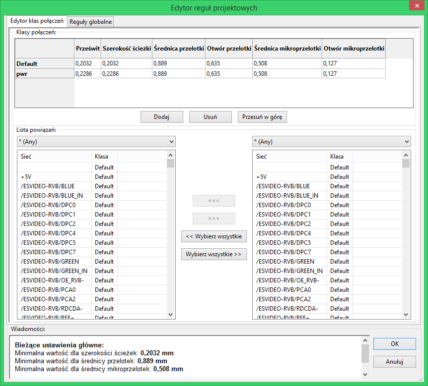
Edycja regu³ globalnych
Oprócz regu³ zwi±zanych z klasami po³±czeñ dostêpne s± te¿ regu³y globalne. Dotycz± one:
- Typów przelotek.
- W³±czania/wy³±czania mikroprzelotek, przelotek ¶lepych i zagrzebanych.
- Ustawiania minimalnego prze¶witu (minimalna odleg³o¶æ pomiêdzy ¶cie¿kami, przelotkami a punktami lutowniczymi).
- Ustawiania minimalnych rozmiarów ¶cie¿ek i przelotek.
Je¶li jaka¶ warto¶æ jest mniejsza ni¿ minimalna warto¶æ okre¶lona tutaj, DRC wygeneruje b³±d.
Drugi panel, w którym mo¿na okre¶liæ globalne regu³y projektowe wygl±da nastêpuj±co:
Okno dialogowe pozwala tak¿e manualnie okre¶liæ rozmiary ¶cie¿ek i przelotek wybranych przez u¿ytkownika. Podczas trasowania ¶cie¿ek, mo¿na wybraæ jedn± z tych warto¶ci by stworzyæ ¶cie¿kê lub przelotkê o innym rozmiarze pomijaj±c tymczasowo domy¶lne warto¶ci zapisane w klasach po³±czeñ. System taki jest szczególnie u¿yteczny, gdy na krótkim odcinku bêdzie wymagana inna szeroko¶æ trasowanej ¶cie¿ki (np. w przypadku przeprowadzania ¶cie¿ek pomiêdzy punktami lutowniczymi).
Parametry minimalne przelotek
Pcbnew obs³uguje trzy typy przelotek:
- Przelotka na wylot (through via, zwyk³e przelotki).
- Przelotki ¶lepe (blind) lub zagrzebane (buried).
- Mikroprzelotki, podobne do przelotek zagrzebanych ale ograniczone do zewnêtrznych warstw i najbli¿szych im warstw s±siednich. S± one przeznaczone do ³±czenia uk³adów montowanych w technologii BGA z najbli¿sz± warstw± wewnêtrzn±. Rozmiar takich przelotek jest bardzo ma³y, a otwory s± z regu³y wykonywane laserowo.
Domy¶lnie, wszystkie przelotki maj± ten sam rozmiar odwiertu. To okno dialogowe okre¶la najmniejsze akceptowalne warto¶ci parametrów przelotek. Na p³ytce, mniejsze przelotki ni¿ okre¶lone tutaj wygeneruj± b³±d DRC.
Parametry minimalne ¶cie¿ek
Okre¶la minimaln±, akceptowaln± szeroko¶æ ¶cie¿ki. Na p³ytce, mniejsze szeroko¶ci ¶cie¿ek ni¿ okre¶lone tutaj wygeneruj± b³±d DRC.
W³asne rozmiary ¶cie¿ek
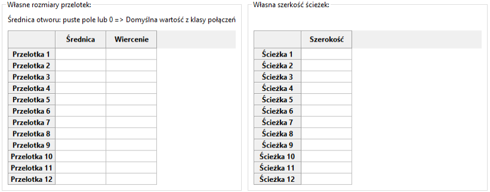
Z pomoc± tego panelu mo¿na okre¶liæ w³asne rozmiary ¶cie¿ek i przelotek. Podczas rêcznego trasowania mo¿na u¿yæ tych parametrów zamiast tych dziedziczonych z klasy po³±czeñ.
Przyk³ady i typowe rozmiary
Rozmiary ¶cie¿ek wed³ug norm IPC
U¿yj najwiêkszej mo¿liwej warto¶ci, zgodnie z minimalnymi rozmiarami podanymi tutaj:
| Jednostka | CLASS 1 | CLASS 2 | CLASS 3 | CLASS 4 | CLASS 5 |
| mm | 0,8 | 0,5 | 0,4 | 0,25 | 0,15 |
| mils | 31 | 20 | 16 | 10 | 6 |
Prze¶wit pomiêdzy ¶cie¿kami
| Jednostka | CLASS 1 | CLASS 2 | CLASS 3 | CLASS 4 | CLASS 5 |
| mm | 0,7 | 0,5 | 0,35 | 0,23 | 0,15 |
| mils | 27 | 20 | 14 | 9 | 6 |
Zwykle, minimalny prze¶wit jest bardzo podobny do minimalnej szeroko¶ci ¶cie¿ki.
Przyk³ady stosowanych regu³ projektowych
'Prosty' - stosowanych w amatorskich PCB
- Prze¶wit: 0.35mm (0.0138 cali).
- Szeroko¶æ ¶cie¿ki: 0.8mm (0.0315 cali).
- Rozmiar padu dla uk³adów scalonych i przelotek: 1.91mm (0.0750 cali).
- Rozmiar padu dla elementów dyskretnych: 2.54mm (0.1 cala).
- Szeroko¶æ ¶cie¿ki masy: 2.54mm (0.1 cala).
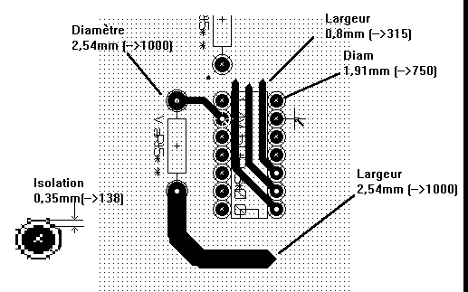
'Standard'
- Prze¶wit: 0.35mm (0.0138 cala).
- Szeroko¶æ ¶cie¿ki: 0.5mm (0.0127 cala).
- Szeroko¶æ pada dla uk³adów scalonych: stosuje siê wyd³u¿anie pól lutowniczych by umo¿liwiæ prowadzenie ¶cie¿ek pomiêdzy padami i daæ jeszcze wystarczaj±c± ilo¶æ miejsca na powierzchniê kleju (1.27x2.54 mm -->0.05x0.1 cala).
- Przelotki: 1.27mm (0.0500 cala).
Manualne trasowanie ¶cie¿ek
Trasowanie manualne jest zalecane, a to dlatego, ¿e jest to jedyna metoda oferuj±ca pe³n± kontrolê nad priorytetami trasowania ¶cie¿ek. Przyk³adowo, preferowane jest rozpoczêcie trasowania od ¶cie¿ek zasilania, tak by mia³y one w³a¶ciw± szeroko¶æ, odpowiednio krótk± d³ugo¶æ oraz by³y znacz±co odseparowane od ¶cie¿ek sygna³owych (dla sygna³ów analogowych lub cyfrowych). A nastêpnie nale¿y trasowaæ newralgiczne ¶cie¿ki.
Po¶ród innych problemów, automatyczne trasowanie ¶cie¿ek czêsto wymaga wielu przelotek. Jednak automatyczne trasowanie mo¿e byæ przydatne w pozycjonowaniu footprintów. Wraz z nabywaniem do¶wiadczenia, prawdopodobnie dla wielu pocz±tkuj±cych projektantów stanie siê jasne, ¿e automatyczne trasowanie jest przydatne do szybkiego trasowania "oczywistych ¶cie¿ek", jednak pozosta³e ¶cie¿ki najlepiej jest trasowaæ rêcznie.
Pomoc w trasowaniu ¶cie¿ek
Pcbnew oferuje parê u³atwieñ przy trasowaniu manualnym.
Mo¿e na przyk³ad wy¶wietlaæ po³±czenia wspomagaj±ce (ratsnest), je¶li opcja  na lewym panelu jest aktywna.
na lewym panelu jest aktywna.
Narzêdzie  pozwala za¶ na pod¶wietlanie wybranej sieci, wystarczy tylko klikn±æ na ¶cie¿kê lub na pole lutownicze nale¿±cy do danej sieci by zosta³a ona w ca³o¶ci wyró¿niona. Aby skasowaæ pod¶wietlenie wystarczy ponownie klikn±æ, ale tym razem w puste pole na obszarze roboczym.
pozwala za¶ na pod¶wietlanie wybranej sieci, wystarczy tylko klikn±æ na ¶cie¿kê lub na pole lutownicze nale¿±cy do danej sieci by zosta³a ona w ca³o¶ci wyró¿niona. Aby skasowaæ pod¶wietlenie wystarczy ponownie klikn±æ, ale tym razem w puste pole na obszarze roboczym.
Nad procesem trasowania ¶cie¿ek czuwa równie¿ DRC, które sprawdza ¶cie¿ki podczas ich trasowania w czasie rzeczywistym i nie dopu¶ci do tworzenia ¶cie¿ek, które nie spe³niaj± regu³ DRC.
Mo¿na równie¿ wy³±czyæ DRC za pomoc± ikony  na lewym pasku narzêdzi, ale jest to niezalecane i w sumie niebezpieczne. Opcja ta powinna byæ wy³±czana tylko w szczególnych przypadkach.
na lewym pasku narzêdzi, ale jest to niezalecane i w sumie niebezpieczne. Opcja ta powinna byæ wy³±czana tylko w szczególnych przypadkach.
Trasowanie ¶cie¿ek
Dostêp do narzêdzia do trasowania ¶cie¿ek jest mo¿liwe na trzy sposoby :
- Mo¿na u¿yæ ikony
 znajduj±cej siê na prawym pasku narzêdzi.
znajduj±cej siê na prawym pasku narzêdzi. - Mo¿na u¿yæ polecenia Dodaj / ¦cie¿ka z g³ównego menu.
- Mo¿na u¿yæ klawisza skrótu : domy¶lnie X.
Nowa ¶cie¿ka musi rozpoczynaæ od punktu lutowniczego albo na innej ¶cie¿ce, poniewa¿ Pcbnew musi wiedzieæ do jakiej sieci ma nale¿eæ nowo trasowana ¶cie¿ka (oraz w celu dopasowania regu³ DRC).

Podczas prowadzenia ¶cie¿ki, Pcbnew wy¶wietla najbli¿sze po³±czenia wspomagaj±ce (ich ilo¶æ mo¿na okre¶liæ za pomoc± opcji Maksymalna ilo¶æ ³±cz w oknie dialogowym wywo³ywanym przez polecenie Ustawienia / G³ówne), a tak¿e automatycznie pod¶wietla punkty lutownicze nale¿±ce do tej samej sieci.
Aby zakoñczyæ trasowanie ¶cie¿ki mo¿na pos³u¿yæ siê menu podrêcznym gdzie wybieramy polecenie Zakoñcz ¶cie¿kê. Mo¿na równie¿ skorzystaæ z odpowiedniego klawisza skrótów (domy¶lnie End) albo po prostu dwukrotnie klikn±æ lewym klawiszem myszy.
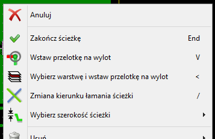
Przesuwanie i przeci±ganie ¶cie¿ek
Gdy aktywne jest narzêdzie do trasowania ¶cie¿ek  , ¶cie¿kê znajduj±c± siê w miejscu kursora mo¿na przesuwaæ wybieraj±c klawisz skrótu M. W podobny sposób mo¿na równie¿ ¶cie¿kê przeci±gaæ (³±cznie z najbli¿szymi jej segmentami) u¿ywaj±c klawisza skrótu G. Pcbnew oferuje jeszcze jeden sposób na przeci±ganie segmentów ¶cie¿ek, z zachowaniem nachylenia pozosta³ych segmentów. Opcja ta jest dostêpna z menu podrêcznego : Przeci±gnij segmenty, zachowaj nachylenie.
, ¶cie¿kê znajduj±c± siê w miejscu kursora mo¿na przesuwaæ wybieraj±c klawisz skrótu M. W podobny sposób mo¿na równie¿ ¶cie¿kê przeci±gaæ (³±cznie z najbli¿szymi jej segmentami) u¿ywaj±c klawisza skrótu G. Pcbnew oferuje jeszcze jeden sposób na przeci±ganie segmentów ¶cie¿ek, z zachowaniem nachylenia pozosta³ych segmentów. Opcja ta jest dostêpna z menu podrêcznego : Przeci±gnij segmenty, zachowaj nachylenie.
Wstawianie przelotek
Przelotki mog± byæ umieszczane tylko podczas trasowania ¶cie¿ek:
- Z wykorzystaniem opcji Wstaw przelotkê z menu podrêcznego.
- Za pomoc± klawisza skrótu (domy¶lnie V).
- Automatycznie, je¶li podczas trasowania zostaje zmieniona warstwa sygna³owa za pomoc± odpowiednich klawiszy skrótów.
Wybór/Edycja szeroko¶ci ¶cie¿ek oraz rozmiaru przelotek
Po klikniêciu na ¶cie¿ce lub polu lutowniczym, Pcbnew automatycznie wybiera odpowiedni± klasê po³±czeñ i szeroko¶æ ¶cie¿ki oraz rozmiar przelotki pochodziæ bêdzie z parametrów tej klasy.
Jak wcze¶niej zosta³o zauwa¿one, edytor Regu³ globalnych posiada narzêdzie do wprowadzenia dodatkowych rozmiarów ¶cie¿ek i przelotek. Aby móc ich u¿ywaæ podczas trasowania ¶cie¿ek mo¿na korzystaæ z:
- List rozwijanych na górnym pasku narzêdzi.
- Menu podrêcznego, wybieraj±c podmenu Wybierz szeroko¶æ ¶cie¿ki.
Dlatego u¿ytkownik mo¿e korzystaæ z domy¶lnych warto¶ci z klas po³±czeñ, lub w razie potrzeby okre¶lonej warto¶ci.
Wybór szeroko¶ci ¶cie¿ek i rozmiaru przelotek z paska narzêdzi
| Wy¶wietla aktualn± szeroko¶æ ¶cie¿ki. Gwiazdka oznacza, ¿e dana warto¶æ jest warto¶ci± domy¶ln± z klasy po³±czeñ. |
|
| 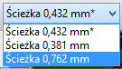 | Z pomoc± rozwijanej listy mo¿na wybraæ szeroko¶æ ¶cie¿ki. Pierwsza warto¶æ na li¶cie jest zawsze warto¶ci± ustalon± w klasie po³±czeñ. Inne warto¶ci to szeroko¶ci ¶cie¿ek wpisane w zak³adce Regu³y Globalne. |
| Wy¶wietla aktualny rozmiar przelotki. Gwiazdka oznacza, ¿e dana warto¶æ jest warto¶ci± domy¶ln± z klasy po³±czeñ. |
|
| Z pomoc± rozwijanej listy mo¿na wybraæ rozmiar przelotki. Pierwsza warto¶æ na li¶cie jest zawsze warto¶ci± ustalon± w klasie po³±czeñ. Inne warto¶ci to rozmiary przelotek wpisane w zak³adce Regu³y Globalne. |
|
| Gdy ta opcja jest w³±czona wybór szeroko¶ci ¶cie¿ek jest automatyczna. Gdy nowa ¶cie¿ka rozpoczyna siê na istniej±cej ¶cie¿ce, nowa ¶cie¿ka dziedziczy swoj± szeroko¶æ z istniej±cej ¶cie¿ki. |
U¿ywanie menu podrêcznego
Mo¿na wybraæ nowy rozmiar przed trasowaniem lub zmieniæ uprzednio stworzone przelotki lub segmenty ¶cie¿ek.

Je¶li chcieliby¶my zmieniæ wiele rozmiarów przelotek (lub ¶cie¿ek), najlepszym rozwi±zaniem jest u¿ycie specjalnej klasy po³±czeñ dla sieci, które musz± byæ zmienione (Zobacz Zmiany globalne ¶cie¿ek i przelotek).
Edycja i korekcja ¶cie¿ek
Zmiana trasy ¶cie¿ki
W wielu przypadkach zmiana prowadzenia ¶cie¿ki jest wystarczaj±ca. Poni¿szy rysunek przedstawia ¶cie¿kê w trakcie tworzenia nowej trasy:

Gdy nowa ¶cie¿ka zostanie zakoñczona:

Pcbnew automatycznie usunie star± ¶cie¿kê je¶li jest ona zbêdna i tworzy³a by niezamierzon± pêtlê. Opcja usuwania starych ¶cie¿ek mo¿e byæ równie¿ wy³±czona w opcjach.
Zmiany globalne ¶cie¿ek i przelotek
Czasami zachodzi potrzeba, by w zaprojektowanej p³ytce poprawiæ niektóre ¶cie¿ki lub przelotki. W przypadku du¿ej ilo¶ci zmian, modyfikacja krok po kroku by³aby czasoch³onna. Pcbnew umo¿liwia jednak zautomatyzowanie tego procesu z pomoc± polecenia Edycja rozmiarów wszystkich ¶cie¿ek i przelotek dostêpn± z menu podrêcznego :

Pojawiaj±ce siê wtedy okno dialogowe pozwala na zmiany globalne ¶cie¿ek i/lub przelotek dla :
- Bie¿±cej sieci.
- Dla ca³ej p³ytki.
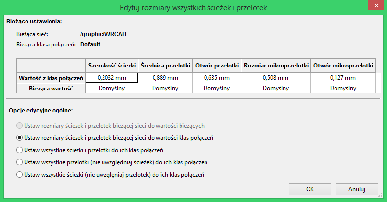
9. Tworzenie wype³nionych stref
Strefy wype³nienia definiowane s± za pomoc± obrysu (zamkniêtego wielok±ta) i mog± zawieraæ przestrzenie niewype³nione (zamkniête wielok±ty wewn±trz obrysu). Strefy mo¿na umieszczaæ zarówno na warstwach sygna³owych jak i technicznych.
Tworzenie wype³nionych stref na warstwach sygna³owych (miedzi)
Po³±czenia pól lutowniczych (oraz ¶cie¿ek) wykonanych w postaci wype³nionej strefy s± testowane przez DRC. Dlatego te¿ strefy musz± zostaæ wype³nione (nie tylko utworzone) by mog³y po³±czyæ pola lutownicze znajduj±ce siê w tej samej sieci.
Pcbnew u¿ywa obecnie segmentów ¶cie¿ek lub p³aszczyzn do wype³niania stref. Ka¿da z tych opcji ma swoje zalety jak i wady, na przyk³ad przy przerysowywaniu obszaru roboczego. Koñcowy rezultat jest zawsze taki sam.
Z powodu czasu jaki zajmuje wype³nienie strefy, wype³nianie nie jest wykonywane na bie¿±co po ka¿dej zmianie. Ponowne wype³nienie strefy jest wykonywane przy:
- Wydaniu polecenia wype³nienia strefy.
- Gdy przeprowadzany jest test DRC.
W zwi±zku z powy¿szym, strefy musz± byæ ponownie wype³nione po zmianach w prowadzeniu ¶cie¿ek lub przy zmianach punktów lutowniczych.
Strefy (zazwyczaj pola masy lub pola zasilania) s± pod³±czone z jedn± wybran± sieci±. Dlatego te¿, przy tworzeniu strefy nale¿y :
- Wybraæ parametry strefy (nazwa sieci, warstwa...)
- Prze³±czenie warstwy i pod¶wietlenie tej sieci nie jest wymagane, ale nale¿y to do dobrych praktyk.
- Stworzyæ obrys strefy ograniczaj±cy j± tylko do wybranego obszaru (Je¶li nie bêdzie on wybrany to strefa obejmie ca³± p³ytkê).
- Wype³niæ strefê.
Pcbnew próbowaæ bêdzie wype³niæ strefê w ca³o¶ci i zwykle nie bêdzie ona posiadaæ ¿adnych niepo³±czonych bloków. Jednak mo¿e siê zdarzyæ, ¿e z powodu przeszkód niektóre fragmenty pozostan± niewype³nione.
Strefy nie posiadaj±ce przypisanej sieci nie s± czyszczone i mog± posiadaæ oddzielne wysepki. Program Pcbnew przy tworzeniu takiej strefy wy¶wietla stosowne ostrze¿enie.
Tworzenie stref na warstwach sygna³owych
Tworzenie krawêdzi strefy
Aby narysowaæ strefê nale¿y u¿yæ narzêdzia ukrytego pod ikon±  . Warstw± aktywn± w tym wypadku musi byæ jedna z warstw sygna³owych (miedzi).
Gdy kliknie siê na obszarze roboczym w miejscu gdzie ma zaczynaæ siê obrys strefy, otworzy siê okno dialogowe z opcjami strefy:
. Warstw± aktywn± w tym wypadku musi byæ jedna z warstw sygna³owych (miedzi).
Gdy kliknie siê na obszarze roboczym w miejscu gdzie ma zaczynaæ siê obrys strefy, otworzy siê okno dialogowe z opcjami strefy:
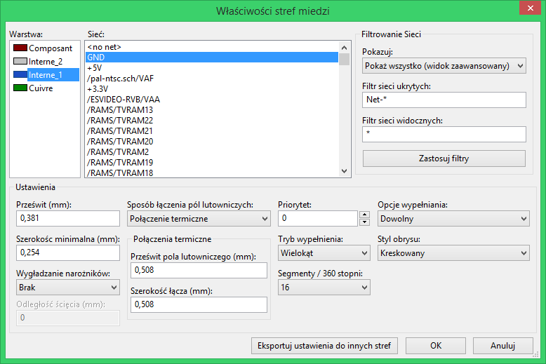
Mo¿na tu ustaliæ parametry dla rysowanej strefy (sieæ do której bêdzie nale¿eæ, warstwa, opcje wype³nienia, priorytet oraz opcje ³±czenia z polami lutowniczymi...). Opcje te zostan± opisane dalej.
Po okre¶leniu parametrów nale¿y na wybranej warstwie narysowaæ obrys strefy. Obrys strefy to wielok±t, którego kolejne naro¿niki s± rozmieszczane w miejscach gdzie dokonano klikniêæ mysz± (lewym klawiszem). Podwójne klikniêcie koñczy rysowanie wielok±ta.
Tworzony wielok±t jest zamykany automatycznie. Je¶li zatem punkt pocz±tkowy nie znajduje siê w miejscu koñcowym obrysu, Pcbnew doda dodatkowy segment ³±cz±cy te punkty.
Uwaga:
- Kontrola DRC jest aktywna podczas tworzenia obrysu strefy.
- Naro¿nik, który móg³by wygenerowaæ b³±d DRC NIE zostanie zaakceptowany przez Pcbnew.
Na poni¿szym rysunku znajduje siê narysowany obrys strefy (linia z wype³nieniem kreskowym):

Ustalanie priorytetów stref wype³nieñ
Czasem ma³a strefa wype³nienia musi zostaæ utworzona wewn±trz innej wiêkszej strefy wype³nienia. Utworzenie takiej strefy jest mo¿liwe dziêki priorytetom stref. Strefy, które maj± wy¿szy priorytet s± rysowane najpierw.
Do ustalenia priorytetu strefy s³u¿y opcja Priorytet w oknie dialogowym w³a¶ciwo¶ci strefy.
Przyk³adowo. Na rysunku poni¿ej znajduj± siê dwie strefy. Pierwsza z nich - zewnêtrzna - ma priorytet ustawiony na warto¶æ 0, druga za¶ - wewnêtrzna - ma ustawiony priorytet ustawiony na warto¶æ 5:
Po wype³nieniu stref, bêd± one wygl±daæ nastêpuj±co:

Wype³nianie strefy
By móc wype³niæ strefê nale¿y klikn±æ prawym klawiszem w miejscu gdzie znajduje siê linia obrysu i z menu podrêcznego wybraæ polecenie Wype³nij strefê:
Poni¿szy rysunek pokazuje rezultat jaki uzyskamy po wydaniu tego polecenia:

Jak widaæ wolne obszary wewn±trz obrysu zosta³y wype³nione jednolit± p³aszczyzn±.
Mo¿na jednak zauwa¿yæ, ¿e w obrysie strefy znalaz³y siê te¿ pola które nie zosta³y wype³nione. Dzieje siê tak dlatego, ¿e pola te nie maj± mo¿liwo¶ci po³±czyæ siê z reszt± strefy:
- Jedn± z przeszkód jest ¶cie¿ka przechodz±ca przez dwie przeciwleg³e krawêdzie.
- Nie ma te¿ ¿adnego punktu ³±cz±cego ten obszar z pozosta³ym.
Dlatego te¿, Pcbnew automatycznie usun±³ pola niewype³nione.
Uwaga:
W strefie mo¿na utworzyæ wiele podstref zwanych strefami odciêtymi (o nich dowiemy siê w dalszej czê¶ci tekstu), w których mo¿na wkluczyæ wype³nienia (cut-outs).
Poni¿ej prosty przyk³ad:

I rezultat dzia³ania polecenia wype³nienia strefy:

Opcje wype³nienia
Za pomoc± tych opcji mo¿na:
- Wybraæ tryb wype³nienia (Wielok±t, Segment).
- Wybraæ prze¶wit dla strefy i minimaln± szeroko¶æ wype³nienia.
- Wybraæ tryb ³±czenia pól lutowniczych ze stref± wewn±trz strefy (Brak, Pe³ny, Po³±czenie termiczne).
- Wybraæ parametry zwi±zane z postaci± ³±cza termicznego.
- Wybraæ tryb w jakim pokazywany jest obrys strefy.
- Wybraæ ilo¶æ segmentów sk³adaj±cych siê na pe³ne otoczenie elementów kolistych (16 lub 32).
- Wybraæ priorytet u¿ywany przy wype³nianiu stref.
Tryby wype³nieñ
Strefy mog± zostaæ wype³nione za pomoc± wielok±tów lub segmentów. Rezultat jest ten sam. Je¶li jednak bêd± problemy z trybem wielok±tów (wolne od¶wie¿anie widoku) lepiej u¿yæ trybu z wype³nieniem w postaci segmentów.
Prze¶wity oraz minimalna grubo¶æ miedzi
Dobrym wyborem jest ustawienie prze¶witu dla strefy nieco wiêkszego ni¿ siatka jaka u¿ywana jest przy trasowaniu po³±czeñ.
Minimalny szeroko¶æ wype³nienia ogranicza mo¿liwo¶æ tworzenia zbyt ma³ych p³aszczyzn w obrêbie strefy.
Ostrze¿enie:
Je¶li warto¶æ ta jest zbyt du¿a, ma³e kszta³ty jak odcinki ³±cza termicznego mog± nie byæ rysowane.
Opcje otaczania pól lutowniczych
Pola lutownicze nale¿±ce do tej samej sieci co strefa mog± zostaæ do³±czone lub wy³±czone ze strefy, albo po³±czone ze stref± za pomoc± ³±cz termicznych.
Je¶li pola zostan± do³±czone to mo¿na napotkaæ trudno¶ci przy lutowaniu b±d¼ rozlutowywaniu takich pól.
Je¶li pola nie zostan± do³±czone, po³±czenia mog± nie byæ wystarczaj±co dobre lub wcale mo¿e ich nie byæ je¶li do takich pól nie by³y poprowadzone ¶cie¿ki.
Po³±czenia termiczne stanowi± rozs±dny kompromis pomiêdzy oba powy¿szymi opcjami.
Ró¿nice w dzia³aniu tych trzech opcji przedstawiaj± nastêpne rysunki:
 |
Pola lutownicze s± do³±czone do strefy. Tryb Pe³ny. |
 |
Pola lutownicze zosta³y wykluczone. Tryb Brak. Uwaga:
|
 |
£±cza termiczne. Pole lutownicze jest ³±czone ze stref± za pomoc± czterech segmentów. Szeroko¶æ segmentów jest taka sama jak bie¿±ca warto¶æ ustalona dla szeroko¶ci ¶cie¿ek danej sieci. |
Parametry ³±czy termicznych
 |
 |
Te dwie opcje przeznaczone s± do okre¶lenia szeroko¶ci wolnego pola otaczaj±cego pola lutownicze w przypadku ³±czy termicznych:
Wybór parametrów
Warto¶æ wpisana w szeroko¶ci miedzi dla ³±czy termicznych musi byæ wiêksza ni¿ minimalna warto¶æ szeroko¶ci ustalona dla strefy. W innym przypadku nie zostanie ona narysowana.
Przy okazji nale¿y nadmieniæ, ¿e zbyt du¿a warto¶æ tego parametru lub parametru zwi±zanego z rozmiarem pola otaczaj±cego, nie pozwoli stworzyæ ³±cza termicznego dla ma³ych punktów lutowniczych (jakie na przyk³ad wystêpuj± w footprintach dla obudów SMD).
Dodawanie strefy odciêtej wewn±trz strefy wype³nionej
Strefa odciêta musi byæ czê¶ci± innej strefy wype³nienia. Jest to warunek obowi±zkowy. Zatem przed rozpoczêciem definiowania strefy odciêtej musi istnieæ ju¿ obrys strefy wype³nienia.
Dodawanie strefy odciêtej jest przeprowadzane podobnie jak dodawanie strefy wype³nienia, z t± ró¿nic±, ¿e stanowiæ ona bêdzie obszar niewype³niony:
- Najpierw nale¿y klikn±æ prawym klawiszem na istniej±cym obrysie strefy.
- Nastêpnie wybraæ polecenie ukryte pod ikon±
 na prawym pasku narzêdzi lub z menu podrêcznego wybraæ polecenie Dodaj obszar odciêty.
na prawym pasku narzêdzi lub z menu podrêcznego wybraæ polecenie Dodaj obszar odciêty. - I dok³adnie tak samo jak w przypadku strefy wype³nienia narysowaæ obrys.
Po stworzeniu strefy odciêtej, strefa mo¿e wygl±daæ nastêpuj±co:
 |
Wewn±trz strefy wype³nienia - gdzie kreskowanie jest lewostronne - zosta³a stworzona strefa odciêta; z kreskowaniem prawostronnym. |
Edycja krawêdzi
Jest kilka sposobów by zmodyfikowaæ obrys strefy:
- Mo¿na przesuwaæ jej naro¿niki lub krawêdzie za pomoc± polecenia Przeci±gnij naro¿nik lub Przeci±gnij segment obrysu.
- Mo¿na dodawaæ lub usuwaæ naro¿niki za pomoc± polecenia Utwórz naro¿nik lub Usuñ naro¿nik.
- Mo¿na dodaæ podobn± strefê (Dodaj strefê bli¼niacz±) lub strefê odciêt± (Dodaj obszar odciêty). W przypadku na³o¿enia siê stref na siebie zostan± one odpowiednio po³±czone razem.
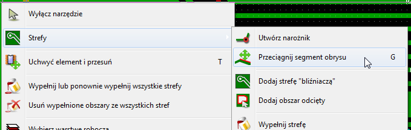
Aby przesun±æ jeden z naro¿ników lub krawêd¼ strefy, nale¿y klikn±æ prawym klawiszem na wybrany element obrysu strefy i wybraæ polecenie Przeci±gnij naro¿nik. Nastêpnie za pomoc± myszy przesun±æ ten element w inne miejsce i klikn±æ podwójnie by zakoñczyæ polecenie.
Poni¿szy rysunek ukazuje zachowanie obrysu strefy odciêtej podczas przeci±gania naro¿nika:

Po zakoñczeniu polecenia strefa powinna wygl±daæ tak:

Poniewa¿ obrysy strefy spotka³y siê w dwóch miejscach nast±pi³o odjêcie obrysu strefy odciêtej od strefy wype³nienia.
Mo¿na równie¿ powiêkszaæ strefê wype³nienia dodaj±c do niej inn± strefê wype³nienia: strefê bli¼niacz±.
 |
Dodanie obrysu strefy bli¼niaczej. |
 |
Rezultat operacji. Poniewa¿ by³a to strefa bli¼niacza nast±pi³o ich po³±czenie. |
Powielanie istniej±cych stref
Istniej±ce strefy mo¿na powielaæ na inne warstwy. W tym celu nale¿y naprowadziæ kursor na krawêd¼ strefy, któr± trzeba powieliæ i z menu podrêcznego wybraæ polecenie Powiel strefê.
Po wybraniu tego polecenia pojawi siê standardowe okno z ustawieniami strefy gdzie nale¿y przede wszystkim okre¶liæ, na jak± warstwê powieliæ strefê. Wszelkie parametry powielonej mo¿na zmieniæ a jedynymi niezmiennymi parametrami, które zostan± skopiowane ze strefy ¼ród³owej, bêdzie kszta³t jej obrysu.
Nie da siê powielaæ stref narysowanych na warstwach technicznych oraz nie mo¿na powieliæ strefy z warstwy sygna³owej na warstwê techniczn±.
Edycja parametrów stref
Parametry narysowanych stref mo¿na zmieniaæ. W tym celu nale¿y klikn±æ prawym klawiszem na obrys strefy, oraz u¿yæ polecenia Edytuj parametry strefy:
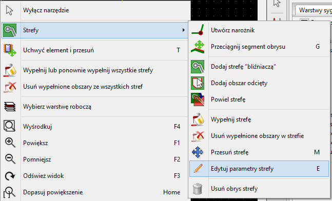
Po tej operacji zostanie otwarte okno z parametrami bie¿±cej strefy, takie samo jak przy rozpoczêciu definiowania strefy.
Je¶li strefa zosta³a ju¿ wype³niona to zmiany parametrów strefy bêd± widoczne dopiero po ponownym wype³nieniu strefy.
Koñcowe wype³nianie strefy
Po zakoñczeniu trasowania wszystkich ¶cie¿ek, gdy p³ytka jest ju¿ gotowa, nale¿y wype³niæ wszystkie strefy. By tego dokonaæ trzeba:
- Aktywowaæ narzêdzia zwi±zane ze strefami klikaj±c w ikonê na prawym panelu.
- Klikn±æ prawym klawiszem by wywo³aæ menu podrêczne.
- U¿yæ polecenia Wype³nij strefê.
Nale¿y mieæ na uwadze, ¿e kalkulacje zwi±zane z wype³nieniem strefy mog± zaj±æ wiêcej czasu je¶li siatka wype³nienia jest ma³a.
Zmiany nazw sieci w strefie
Przy zmianach na schemacie, lista sieci mo¿e równie¿ ulec zmianie, a w zwi±zku z tym niektóre nazwy sieci tak¿e mog± zostaæ zmienione. Dla przyk³adu, sieæ VCC mo¿e staæ siê sieci± o nazwie +5V po zmianach na schemacie.
Gdy zostanie przeprowadzona globalna kontrola DRC, Pcbnew sprawdzi czy nazwa sieci powi±zana ze stref± wype³nienia nadal istnieje, a je¶li nie zostanie zg³oszony b³±d. Dlatego te¿ mo¿e byæ konieczne manualne poprawienie tego parametru strefy by zmieniæ nazwê sieci.
Tworzenie stref na warstwach technicznych
Tworzenie obrysu strefy
Tworzenie wype³nionych stref na warstwach technicznych jest mo¿liwe, jednak przebiega nieco inaczej ni¿ w przypadku warstw sygna³owych.
Równie¿ i tu nale¿y wybraæ z prawego paska narzêdzi ikonê  . Jednak wcze¶niej nale¿y aktywowaæ wybran± warstwê techniczn±.
. Jednak wcze¶niej nale¿y aktywowaæ wybran± warstwê techniczn±.
Po klikniêciu rozpoczynaj±cym rysowanie strefy zostanie otwarte okno dialogowe:
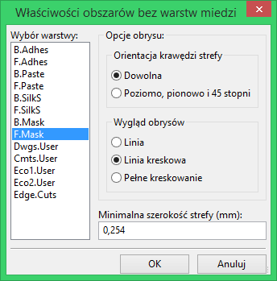
Z listy warstw nale¿y wybraæ warstwê docelow± dla strefy, okre¶liæ parametry (podobne do poznanych wcze¶niej) i za pomoc± myszy narysowaæ obrys strefy tak samo jak w przypadku stref na warstwach sygna³owych.
Uwagi:
- By dokonaæ zmian w obrysie strefy nale¿y postêpowaæ w ten sam sposób co przy strefach na warstwach sygna³owych.
- Na warstwach technicznych mo¿na równie¿ stosowaæ strefy odciête.
10. Przygotowywanie plików produkcyjnych
Uwaga wstêpna
Wszystkie wygenerowane pliki s± domy¶lnie umieszczane w katalogu roboczym projektu, czyli tam gdzie znajduje siê plik z projektem PCB.
Koñcowe przygotowania projektu
Zalecane jest:
- Oznaczenie warstw (np., top lub front i bottom lub back) oraz nazwy projektu przez umieszczenie odpowiednich tekstów na ka¿dej z warstw. W ten sposób zak³ad produkcyjny bêdzie wiedzia³ z jak± klisz± ma do czynienia.
- Wszystkie teksty umieszczone na dolnej warstwie miedzi (czasem zwanej solder lub bottom) musz± byæ w lustrzanym odbiciu, gdy¿ bêd± one normalnie widoczne po obróceniu p³ytki na drug± stronê.
- Stworzenie wszystkich planów (np. ground plane) i wype³nieñ, modyfikuj±c ¶cie¿ki je¶li trzeba by ich ci±g³o¶æ by³a zapewniona.
- Umieszczenie znaczników odniesienia (target crosshairs) oraz mo¿liwych rozmiarów obrysu p³ytki (s± one zwykle umieszczane na jednej z warstw dowolnego u¿ytku).
Poni¿ej mo¿na ujrzeæ przyk³ad, ukazuj±cy wszystkie te elementy, za wyj±tkiem planów, które zosta³y pominiête dla lepszej widoczno¶ci:

Dodatkowo na powy¿szym obrazku zosta³ umieszczony tak¿e "klucz" dla czterech warstw:

Koñcowy test DRC
Przed wygenerowaniem plików wyj¶ciowych, usilnie zalecane jest przeprowadzenie pe³nego testu >DRC, gdy¿ finalne sprawdzenie p³ytki mo¿e ustrzec przed przykrymi niespodziankami ju¿ po wyprodukowaniu p³ytek.
Uwaga:
Przy uruchamianiu testu DRC wszystkie strefy s± wype³niane lub wype³niane ponownie je¶li wcze¶niej zosta³y ju¿ wype³nione.
Aby przeprowadziæ test DRC projektu p³ytki nale¿y u¿yæ narzêdzia ukrytego pod ikon±  na górnym pasku narzêdzi. Spowoduje to otwarcie nastêpuj±cego okna dialogowego:
na górnym pasku narzêdzi. Spowoduje to otwarcie nastêpuj±cego okna dialogowego:
Po ustaleniu parametrów nale¿y nacisn±æ przycisk .
Ustawienie punktu pocz±tkowego osi pomocniczej
Dla generowanych plików dla fotoplotera i dla plików wierceñ wypada ustawiæ punkt pocz±tkowy osi pomocniczej (auxiliary axis point). Aby to wykonaæ nale¿y u¿yæ narzêdzia ukrytego pod ikon±  na prawym pasku narzêdzi. Nastêpnie ustawiæ punkt pocz±tkowy wybieraj±c jedno z miejsc na p³ytce i klikn±æ. Po tej operacji zostan± dorysowane dwie dodatkowe linie przecinaj±ce siê w nowo ustalonym punkcie:
na prawym pasku narzêdzi. Nastêpnie ustawiæ punkt pocz±tkowy wybieraj±c jedno z miejsc na p³ytce i klikn±æ. Po tej operacji zostan± dorysowane dwie dodatkowe linie przecinaj±ce siê w nowo ustalonym punkcie:

Na powy¿szym przyk³adzie punkt odniesienia osi pomocniczych znajduje siê na jednym z pól lutowniczych w okolicy brzegu p³ytki.
Generowanie plików dla fotoplotera
Generowaniem plików przeznaczonych dla fotoplotera zajmuje siê narzêdzie wywo³ywane za pomoc± polecenia Rysuj z menu Plik.
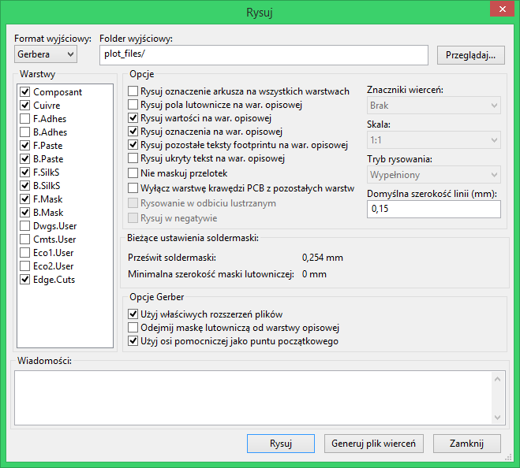
W wiêkszo¶ci przypadków bêd± to pliki w formacie GERBER. Jednak¿e, program daje równie¿ mo¿liwo¶æ generacji plików w formatach HPGL oraz POSTSCRIPT.
Przy wybranej opcji Postscript dla formatu wyj¶ciowego, okno dialogowe bêdzie wygl±daæ nieco inaczej:
W tych dwóch formatach, mo¿na dodatkowo dostrajaæ skalê by skompensowaæ b³êdy skali plotera, tak aby wyj¶ciowy rysunek posiada³ prawid³ow± skalê:
Format GERBER
Dla ka¿dej warstwy, Pcbnew generuje osobny plik zgodny ze standardem GERBER 274X, domy¶lnie w formacie 3.4 (ka¿da koordynata w pliku jest reprezentowana za pomoc± 7 cyfr, z których 3 znajduj± siê przed przecinkiem, a 4 pozosta³e po przecinku; jednostk± podstawow± s± cale). Rysunek jest zawsze w skali 1:1.
Zwykle konieczne jest utworzenie plików dla wszystkich warstw miedzi, oraz w zale¿no¶ci od typu obwodu, masek lutowniczych oraz warstw opisowych (z oznaczeniami elementów). Wszystkie te pliki mog± byæ generowane za jednym razem, zaznaczaj±c odpowiednie pola wyboru na li¶cie warstw.
Przyk³adowo, dla obwodu dwustronnego z mask± do nak³adania pasty (dla rozp³ywowego monta¿u elementów SMD), opisem oraz soldermask±, zostanie wygenerowanych 8 plików (xxxx zastêpuje tutaj nazwê pliku z p³ytk±), które domy¶lnie nazwane zostan±:
xxxx-B_Cu.gbldla dolnej warstwy miedzi.xxxx-F_Cu.gtldla górnej warstwy miedzi.xxxx-F_SilkS.gtodla warstwy opisowej na stronie elementów.xxxx-B_SilkS.gbodla warstwy opisowej na stronie lutowania.xxxx-F_Paste.gtpdla pasty lutowniczej górnej warstwy miedzi.xxxx-B_Paste.gbpdla pasty lutowniczej dolnej warstwy miedzi.xxxx-F_Mask.gtsdla maski lutowniczej g³ównej warstwy miedzi.xxxx-B_Mask.gbsdla maski lutowniczej dolnej warstwy miedzi.
Format GERBER u¿ywany przez Pcbnew to:
- RS274X
- Format 3.4, Calowy, Pominiête zera pocz±tkowe, Format Abs
Takie ustawienia s± bardzo czêsto u¿ywane.
Wiêcej informacji na temat plików GERBER mo¿na znale¼æ w dokumentacji do programu GerbView.
Format HPGL
Standardowym rozszerzeniem dla plików tego typu jest .plt
Rysowanie mo¿e zostaæ wykonane w skali wybranej przez u¿ytkownika i mo¿e mieæ postaæ lustrzanego odbicia. Je¶li zaznaczona jest opcja Rysuj oznaczenia arkusza na wszystkich warstwach, zostanie narysowana równie¿ ramka opisowa.
Format POSTSCRIPT
W przypadku plików Postscript standardowym rozszerzeniem dla plików wyj¶ciowych bêdzie .ps
Tak samo jak w przypadku plików w formacie HPGL, rysowanie mo¿e odbywaæ siê w wybranej skali lub jako lustrzane odbicie.
Opcja Znaczniki wierceñ oferuje mo¿liwo¶æ wype³nienia ca³kowitego pól lutowniczych, pozostawienia pustego pola zgodnego z rozmiarem wiert³a lub umieszczenia na nich tylko ma³ego pustego pola naprowadzaj±cego (dla wiercenia rêcznego).
Je¶li zaznaczona jest opcja Rysuj oznaczenia arkusza na wszystkich warstwach, zostanie narysowana równie¿ ramka opisowa.
Opcje rysowania
| 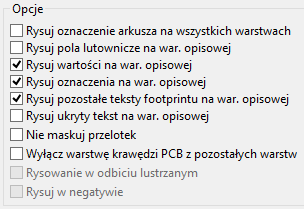 | |
| Format Gerber | Formaty pozosta³e |
Specyficzne opcje zwi±zane z formatem GERBER:
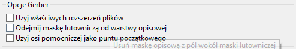
| U¿yj w³a¶ciwych rozszerzeñ plików | Powoduje, ¿e rozszerzenia plików bêd± ró¿ne dla ka¿dego pliku .gbl, .gtl,... zamiast jednego .pho |
| Wy³±cz warstwê krawêdzi PCB z pozosta³ych warstw | Nie przeno¶ elementów znajduj±cych siê na warstwie krawêdziowej na wszystkie inne warstwy. |
| Odejmij maskê lutownicz± od warstwy opisowej | Usuwa fragmenty elementów z warstwy opisowej, które mog³yby znale¼æ siê na warstwie pasty lutowniczej. Zapobiega to rysowaniu warstwy opisowej "po padach". |
Globalne ustawienia prze¶witu dla warstw maski lutowniczej i maski pasty lutowniczej
Warto¶ci prze¶witu masek mog± byæ ustawione globalnie dla warstw maski lutowniczej i warstw pasty lutowniczej. Ustawienia te mog± byæ stosowane :
- Na poziomie pól lutowniczych.
- Na poziomie footprintów.
- Globalnie.
Pcbnew w takim przypadku korzysta z priorytetów ustawieñ i warto¶æ ostateczna jest brana:
- Z warto¶ci ustalonej dla pól lutowniczych. Je¶li jest zerowa to
- Z warto¶ci ustalonej dla footprintu. Je¶li jest zerowa to
- Z warto¶ci ustalonej globalnie.
Odpowiednie opcje s± dostêpne za pomoc± menu Ustawienia / Prze¶wit maski pól lutowniczych:
Po wybraniu tego polecenia wy¶wietlane jest okno dialogowe:

Prze¶wit maski lutowniczej
Warto¶æ bliska 10mils zwykle jest odpowiednia. Warto¶æ ta jest dodatnia, poniewa¿ maska lutownicza jest zwykle wiêksza ni¿ pole lutownicze.
Prze¶wit maski pasty lutowniczej
Koñcowa warto¶æ prze¶witu jest sum± prze¶witu dla pasty lutowniczej oraz procentowej wielko¶ci rozmiaru padu. Warto¶æ ta jest ujemna poniewa¿ maska pasty lutowniczej jest zwykle mniejsza ni¿ pole lutownicze.
Generowanie plik(ów) wierceñ
Przy tworzeniu plików wyj¶ciowych zawsze jest tworzony te¿ plik wierceñ xxxxxx.drl w standardzie EXCELLON (xxxxxx zastêpuje tutaj nazwê pliku p³ytki). Mo¿na jednak równie¿ opcjonalnie wygenerowaæ plan wierceñ, który mo¿e byæ zapisany w formacie HPGL (xxxxxx.plt) lub w formacie POSTSCRIPT (xxxxxx.ps), lub/oraz opcjonalny raport wierceñ (jako zwyk³y plik tekstowy). Jednak jest on u¿yteczny tylko w niektórych przypadkach, na przyk³ad jako materia³ wyj¶ciowy przy dodatkowym sprawdzeniu.
Tworzeniem plików wierceñ zajmuje siê poznane wcze¶niej okno do rysowania plików Gerber, polecenie uruchamiane przez klawisz 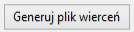; lub te¿ z poziomu g³ównego menu Pcbnew poprzez wybór polecenia Pliki produkcyjne / Plik wierceñ.

G³ówne okno tego narzêdzia wygl±da w ten sposób :
Przy rysowaniu planu wierceñ w formacie HPGL, mo¿liwe jest zdefiniowanie numeru pisaka oraz prêdko¶ci rysowania.
Punkt zerowy wierceñ
Mo¿na wybraæ dwie opcje:
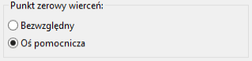
- Bezwzglêdny : u¿ywane s± wspó³rzêdne bezwzglêdne.
- O¶ zewnêtrzna : wspó³rzêdne s± wzglêdne wobec punktu centralnego osi pomocniczych (nale¿y u¿yæ narzêdzia
 na prawym pasku narzêdzi by umie¶ciæ ten punkt w dobrym miejscu).
na prawym pasku narzêdzi by umie¶ciæ ten punkt w dobrym miejscu).
Generowanie dokumentacji monta¿owych
Do produkcji tych plików, mo¿na u¿yæ rysunków warstw opisowych górnej i dolnej. Zazwyczaj tylko elementy znajduj±ce siê po stronie elementów s± wystarczaj±ce do poprawnego obsadzenia PCB. Je¶li jednak jest wykorzystana dolna warstwa opisowa, teksty znajduj±ce siê na tej warstwie musz± byæ narysowane jako lustrzane obicie by by³y normalnie czytelne.
Generowanie plików dla automatów montuj±cych P&P
Opcja ta jest dostêpna poprzez polecenie menu Pliki produkcyjne / Plik po³o¿eñ footprintów. Polecenie to wygenerowaæ mo¿e jeden lub dwa pliki, w zale¿no¶ci od tego jakie wstawiane elementy znajduj± siê na jednej lub na obu stronach p³ytki. Pojawiaj±ce siê okno dialogowe wy¶wietli nazwy pliku(-ów) jakie zosta³y utworzone.
Nale¿y jednak zauwa¿yæ, ¿e ¿aden plik nie zostanie wygenerowany je¶li ¿aden z elementów na p³ytce nie bêdzie posiada³ aktywnego atrybutu Normalny+Wstawianie (zobacz rozdzia³ Edycja footprintów).
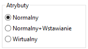
Opcje zaawansowane
Opcje opisane poni¿ej (cze¶æ okna dialogowego wywo³ywanego poprzez polecenie Rysuj z menu Plik) pozwalaj± na precyzyjniejsz± kontrolê procesu rysowania. Wiêkszo¶æ z nich jest u¿yteczna przy tworzeniu plików monta¿owych.
Opcje s± nastêpuj±ce:
| U¿yj w³a¶ciwych rozszerzeñ plików | Opcja specyficzna dla formatu GERBER. Gdy tworzone bêd± pliki wyj¶ciowe dla fotoplotera, plik dla ka¿dej warstwy bêdzie mia³ specyficzne rozszerzenie. Je¶li opcja ta nie jest aktywna wszystkie pliki bêd± mia³y rozszerzenie .pho |
| Wy³±cz warstwê krawêdzi PCB z pozosta³ych warstw | Opcja specyficzna dla formatu GERBER. Zaznaczenie tej opcji spowoduje, ¿e zawarto¶æ warstwy krawêdzi p³ytki nie bêdzie kopiowana na ka¿d± inn± warstwê. |
| Rysuj oznaczenia arkusza na wszystkich warstwach | Zaznaczenie tej opcji spowoduje dodanie ramki arkusza wraz z tabelk±. |
| Rysuj pola lutownicze na war. opisowej | W³±cza/Wy³±cza drukowanie obrysów pól lutowniczych na warstwach opisowych (Je¶li pola lutownicze te zosta³y ju¿ zadeklarowane by pojawi³y siê na tych warstwach). W rzeczywisto¶ci opcja ta przydatna jest w zapobieganiu drukowaniu pól lutowniczych, w trybie wy³±czonym. |
| Rysuj warto¶ci footprintów na war. opisowej | W³±cza mo¿liwo¶æ drukowania zawarto¶ci pola Warto¶æ na warstwie opisowej. |
| Rysuj oznaczenie footprintu na war. opisowej | W³±cza mo¿liwo¶æ drukowania zawarto¶ci pola Oznaczenie na warstwie opisowej. |
| Rysuj pozosta³e teksty footprintu na war. opisowej | W³±cza mo¿liwo¶æ drukowanie zawarto¶ci innych pól na warstwie opisowej. |
| Rysuj ukryty tekst na war. opisowej | Wymusza drukowanie pól (Oznaczenie, Warto¶æ) oznaczonych jako niewidoczne. W po³±czeniu z opcjami Rysuj warto¶ci footprintów na war. opisowej oraz Rysuj oznaczenie footprintu na war. opisowej, opcja ta w³±cza tworzenie dokumentów przydatnych przy monta¿u i naprawach p³ytki. Opcje te okaza³y siê niezbêdne dla obwodów u¿ywaj±cych elementów, które s± zbyt ma³e (SMD), pozwalaj±c na umieszczenie czytelnych dwóch ró¿nych pól tekstowych. |
11. ModEdit - Zarz±dzanie bibliotekami footprintów
Wprowadzenie
Pcbnew jednocze¶nie zarz±dza kilkoma bibliotekami. Tak wiêc, gdy ³adowany jest footprint, wszystkie biblioteki, które pojawiaj± siê na li¶cie bibliotek s± przeszukiwane, a¿ znalezione bêdzie pierwsze wyst±pienie footprintu. W dalszej czê¶ci tekstu bêdziemy u¿ywaæ zwrotu "aktywna biblioteka" dla biblioteki wybranej w edytorze footprintów ModEdit.
ModEdit pozwala na tworzenie i edycjê footprintów :
- Dodawanie oraz usuwanie pól lutowniczych.
- Zmianê w³a¶ciwo¶ci pól lutowniczych (kszta³t, warstwa) dla pojedynczych pól lutowniczych lub globalnie dla wszystkich pól lutowniczych footprintu.
- Edycja postaci graficznej (linie, tekst).
- Edycja pól informacyjnych (warto¶æ, odniesienie, .).
- Edycja do³±czonej dokumentacji (opis, s³owa kluczowe).
ModEdit pozwala tak¿e na zarz±dzanie aktywn± bibliotek±:
- Wy¶wietlanie listy footprintów w aktywnej bibliotece.
- Usuwanie footprintów z aktywnej biblioteki.
- Zapisywanie footprintu w aktywnej bibliotece.
- Zapisywanie wszystkich footprintów zawartych na obwodzie drukowanym.
Z pomoc± ModEdit jest równie¿ mo¿liwe tworzenie nowych bibliotek.
Biblioteka w zasadzie sk³ada siê z dwóch plików:
- Sama biblioteka (plik z rozszerzeniem
.mod, albo w nowszej wersji folder o rozszerzeniu.pretty, a w nim pliki.kicad_mod) - Do³±czona dokumentacja (plik z rozszerzeniem
.mdc, a w nowszej wersji zaszyta w pliku.kicad_mod)
Plik z dokumentacj± .mdc jest systematycznie od¶wie¿any po ka¿dej modyfikacji odpowiedniego pliku biblioteki; w ten sposób mo¿e on byæ ³atwo odzyskany je¶li zosta³ utracony. Plik z do³±czon± dokumentacj± s³u¿y jako akcelerator w dostêpie do pe³nej dokumentacji footprintu.
Edytor ModEdit
Edytor footprintów jest dostêpny z poziomu Pcbnew na dwa sposoby:
- Bezpo¶rednio, za pomoc± ikony
 na g³ównym pasku narzêdzi Pcbnew.
na g³ównym pasku narzêdzi Pcbnew. - W oknie dialogowym z w³a¶ciwo¶ciami footprintu (jak na poni¿szym obrazku ; dostêp poprzez menu podrêczne), gdzie dostêpny jest klawisz Edytor footprintów
W takim przypadku, aktywny footprint z obwodu drukowanego bêdzie automatycznie za³adowany w edytorze footprintów, pozwalaj±c na jego bezpo¶redni± modyfikacjê (lub archiwizacjê).
Interfejs u¿ytkownika ModEdit
Wywo³anie edytora footprintów ModEdit spowoduje otwarcie nastêpuj±cego okna:
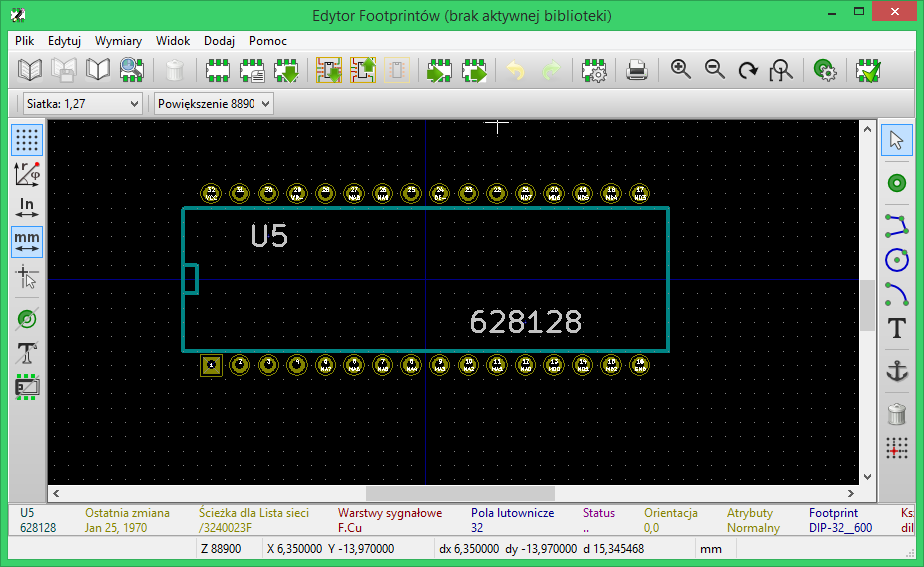
G³ówny pasek narzêdziowy
G³ówny pasek narzêdziowy ModEdit wygl±da nastêpuj±co:

Korzystaj±c z tego paska narzêdzi dostêpne s± nastêpuj±ce polecenia:
| Wybór aktywnej biblioteki. | |
| Zapis bie¿±cego footprintu w aktywnej bibliotece. | |
| Tworzenie nowej biblioteki oraz zapisanie w niej bie¿±cego footprintu. | |
| Otwiera okno przegl±darki bibliotek. | |
| Dostêp do okna dialogowego pozwalaj±cego usuwanie footprintów z aktywnej biblioteki. | |
| Tworzenie nowego footprintu. | |
| Tworzenie nowego footprintu z pomoc± dostêpnych kreatorów. | |
| Za³adowanie footprintu z aktywnej biblioteki. | |
| Za³adowanie (Import) footprintu z obwodu drukowanego. | |
| Aktualizacja bie¿±cego footprintu w obwodzie drukowanym. Je¶li footprint zosta³ wcze¶niej zaimportowany z bie¿±cej p³ytki, zast±pi on odpowiedni footprint na p³ytce (uwzglêdniaj±c pozycjê oraz orientacjê footprintu). | |
| Eksport bie¿±cego footprintu do obwodu drukowanego. Je¶li footprint zosta³ za³adowany z biblioteki, zostanie on skopiowany na p³ytkê i umieszczony na pozycji bazowej pola roboczego. | |
| Import footprintu z pliku stworzonego przez polecenie Eksport ( |
|
Eksport footprintu. Te polecenie jest prawie identyczne jak polecenie przeznaczone do tworzenia bibliotek, jedyna ró¿nica to taka, ¿e eksport tworzy bibliotekê w katalogu u¿ytkownika, podczas gdy polecenie tworzenia nowej biblioteki tworzy j± w standardowym katalogu z bibliotekami (zwykle kicad/modules). |
|
| Cofniêcie lub przywrócenie dokonanych zmian. | |
| Edycja w³a¶ciwo¶ci footprintu. | |
| Wywo³uje okno dialogowe wydruku. | |
| Standardowe polecenia zwi±zane ze zmian± powiêkszenia obszaru roboczego. | |
| Wywo³uje edytor pól lutowniczych. | |
| Sprawdzenie poprawno¶ci footprintu. |
Tworzenie nowego footprintu
Narzêdzie ukrywaj±ce siê pod ikon±  pozwala na utworzenie nowego footprintu. Po wybraniu tego narzêdzia, u¿ytkownik zostanie poproszony o podanie nazwy identyfikuj±cej nowy footprint w bibliotece. Nazwa ta bêdzie s³u¿yæ tak¿e jako oznaczenie footprintu i zostanie zast±piona pó¼niej na obwodzie drukowanym przez oznaczenie z listy sieci (
pozwala na utworzenie nowego footprintu. Po wybraniu tego narzêdzia, u¿ytkownik zostanie poproszony o podanie nazwy identyfikuj±cej nowy footprint w bibliotece. Nazwa ta bêdzie s³u¿yæ tak¿e jako oznaczenie footprintu i zostanie zast±piona pó¼niej na obwodzie drukowanym przez oznaczenie z listy sieci (U1, IC3 ...).
Aby footprint by³ kompletny, bêdzie potrzebne równie¿ dodanie tak¿e nastêpuj±cych elementów sk³adowych footprintu:
- Obrys footprintu (i tekst je¶li potrzeba).
- Pola lutownicze.
- Pole tekstowe Warto¶æ (zawieraj±ce tekst, który bêdzie zast±piony przez prawdziw± warto¶æ przypisan± z listy sieci).
Gdy nowy footprint jest podobny do innego footprintu jaki istnieje w bibliotece albo na p³ytce, mo¿na u¿yæ szybszej metody tworzenia nowego footprintu:
- Za³adowaæ podobny footprint (korzystaj±c z narzêdzi
 ,
,  , lub
, lub  )
) - Zmodyfikowaæ pole z nazw± identyfikacyjn±, wpisuj±c now± nazwê.
- Dokonaæ edycji oraz zapisaæ nowy footprint.
Tworzenie nowej biblioteki
Aby utworzyæ now± bibliotekê mo¿na u¿yæ jednego z dwóch narzêdzi:
- Nowa biblioteka
 , w przypadku którego plik biblioteki jest domy¶lnie tworzony w katalogu z bibliotekami ;
, w przypadku którego plik biblioteki jest domy¶lnie tworzony w katalogu z bibliotekami ; - Eksport
 , w przypadku którego plik biblioteki jest domy¶lnie tworzony w katalogu roboczym projektu.
, w przypadku którego plik biblioteki jest domy¶lnie tworzony w katalogu roboczym projektu.
Okno dialogowe z wyborem nazwy pliku pozwala na okre¶lenie nazwy biblioteki oraz zmiany katalogu. W obu przypadkach, biblioteka bêdzie zawieraæ edytowany footprint.
Ostrze¿enie:
Je¶li istnieje ju¿ jaka¶ biblioteka z tak± sam± nazw±, zostanie ona nadpisana bez ostrze¿enia.
Zapisanie footprintu w aktywnej bibliotece
Operacja zapisu footprintu (modyfikuj±ca plik aktywnej biblioteki) jest przeprowadzana za pomoc± polecenia Zapisz  . Je¶li footprint o tej samej nazwie ju¿ istnieje, zostanie on zast±piony.
. Je¶li footprint o tej samej nazwie ju¿ istnieje, zostanie on zast±piony.
Poniewa¿ tworzone obwody drukowane bêd± zale¿eæ od dok³adno¶ci footprintów w bibliotece, warto przed zapisaniem footprintu dwukrotnie sprawdziæ nowy footprint przed jego zapisem. Zalecane jest równie¿, dokonanie edycji pól z nazw± footprintu, bêd±cych jego identyfikatorem w bibliotece.
Przenoszenie footprintów pomiêdzy bibliotekami
Edytor bibliotek footprintów pozwala tak¿e na przenoszenie footprintów pomiêdzy bibliotekami. Aby przenie¶æ footprint nale¿y:
- Wybraæ bibliotekê ¼ród³ow± (
 ).
). - Za³adowaæ wybrany footprint ().
- Wybraæ bibliotekê docelow± ().
- Zapisaæ footprint (
 ).
).
Przy przenoszeniu footprintów footprint ¼ród³owy nie zostaje usuniêty. Aby zatem pozbyæ siê niepotrzebnego footprintu w bibliotece ¼ród³owej nale¿y ponownie wybraæ bibliotekê ¼ród³ow± oraz usun±æ footprint ( nastêpnie
nastêpnie  ).
).
Zapisywanie footprintów z p³ytek w aktywnej bibliotece
Mo¿liwe jest skopiowanie wszystkich footprintów danego projektu p³ytki do aktywnej biblioteki. Footprinty te zachowaj± swoje bie¿±ce nazwy w bibliotece.
Polecenie to ma dwa zastosowania:
- Tworzenie archiwum lub kompletnej biblioteki z footprintami dla obwodu drukowanego, w przypadku utraty biblioteki.
- U³atwia, co wa¿niejsze, utrzymanie biblioteki w³±czaj±c w to produkcjê dokumentacji bibliotek, jak wyja¶niono poni¿ej.
Dokumentacja dla bibliotek footprintów
Zaleca siê dokumentowaæ footprinty, które zosta³y utworzone, w celu umo¿liwienia szybkiego i bezb³êdnego ich wyszukiwania. Na przyk³ad, ile osób jest w stanie zapamiêtaæ wszystkie warianty wyprowadzeñ obudowy TO92 ...?
Okno dialogowe W³a¶ciwo¶ci footprintu oferuje proste rozwi±zanie tego problemu.
Pozwala ono na wprowadzenie:
- Jedno-liniowego tekstu z opisem footprintu.
- Wielu s³ów kluczowych rozdzielonych spacjami.
Opis footprintu jest wy¶wietlany przez CvPcb na dolnym pasku oraz w Pcbnew w oknie z wyborem footprintu na dolnym panelu.
S³owa kluczowe pozwalaj± na szczegó³owe wyszukiwanie footprintów pasuj±cych do okre¶lonych s³ów. Podczas bezpo¶redniego wczytywania footprintów w Pcbnew (ikona  na prawym pasku narzêdzi) mo¿na u¿yæ s³ów kluczowych w otwieraj±cym siê wtedy oknie dialogowym. Wpisuj±c na przyk³ad tekst
na prawym pasku narzêdzi) mo¿na u¿yæ s³ów kluczowych w otwieraj±cym siê wtedy oknie dialogowym. Wpisuj±c na przyk³ad tekst =CONN spowoduje, ¿e na li¶cie pojawi± siê footprinty, których s³owa kluczowe zawieraj± s³owo CONN.
Dokumentowanie bibliotek - zalecenia praktyczne
Zaleca siê tworzenie bibliotek po¶rednio, tworz±c jeden lub wiêcej pomocniczych obwodów, które stanowiæ bêd± "¼ród³a" (czê¶ci) dla biblioteki w nastêpuj±cy sposób:
- Stworzyæ arkusz p³ytki w formacie A4, w celu jej pó¼niejszego ³atwego wydruku (w skali 1:1).
- Stworzenie footprintów, które biblioteka bêdzie zawieraæ na tej p³ytce.
- Sama biblioteka zostania utworzona poprzez polecenie z menu g³ównego Pcbnew Plik / Archiwizuj obudowy / Utwórz archiwum obudów.
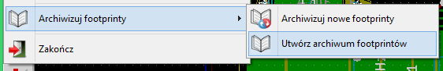
"Prawdziwym" ¼ród³em biblioteki bêdzie zatem dodatkowa p³ytka, a ca³o¶æ idei polega na tym, by jakiekolwiek pó¼niejsze zmiany footprintów wykonywaæ na tej p³ytce. Oczywi¶cie, mo¿e byæ te¿ kilka obwodów zapisanych w tej samej bibliotece.
Generalnie dobrym pomys³em jest, aby utworzyæ sobie ró¿ne biblioteki dla ró¿nych komponentów (z³±cza, elementy dyskretne,...), poniewa¿ Pcbnew jest w stanie przeszukiwaæ wiele bibliotek podczas ³adowania footprintów.
Tutaj znajduje siê przyk³ad takiego arkusza "¼ród³owego":

Technika ta ma kilka zalet:
- Uk³ad mo¿e byæ wydrukowany w skali 1:1 i s³u¿yæ jako papierowa dokumentacja do biblioteki bez zbêdnego wysi³ku przy jej tworzeniu.
- W przypadku wydruku w skali 1:1 mo¿na fizycznie dopasowaæ realne elementy do posiadanych footprintów, co równie¿ mo¿e poprawiæ dok³adno¶æ p³ytek.
- Przysz³e zmiany w Pcbnew mog± wymagaæ ponownego utworzenia bibliotek, co¶ co mo¿na zrobiæ bardzo szybko, je¶li jako "¼ród³a" by³y u¿ywane obwody drukowane tego typu. Jest to o tyle wa¿ne, ¿e format pliku z obwodem drukowanym jest gwarantowany tak by zapewniæ wsteczn± kompatybilno¶æ, co wcale nie musi byæ praktykowane w przypadku formatu pliku biblioteki.
12. ModEdit - Tworzenie i edycja footprintów
Wprowadzenie
Edytor ModEdit u¿ywany jest podczas edycji i tworzenia footprintów. Pozwala on m.in. na:
- Dodawanie lub usuwanie pól lutowniczych.
- Zmiany w³a¶ciwo¶ci pól lutowniczych (kszta³t, warstwa), zarówno dla indywidualnych pól lutowniczych jak i wszystkich pól lutowniczych w module.
- Dodawanie i edycja elementów graficznych (kontury, tekst swobodny).
- Edycja pól tekstowych (warto¶æ, oznaczenie, ...)
- Edycja za³±czonej dokumentacji footprintu (przeznaczenie, s³owa kluczowe).
Elementy sk³adowe footprintów
Footprint to nie tylko fizyczna reprezentacja elementu umieszczonego pó¼niej na p³ytce, lecz tak¿e i ³±cznik powi±zany ze schematem. Ka¿dy footprint zawiera zwykle trzy ró¿ne, jednak¿e wa¿ne elementy:
- Pola lutownicze.
- Kontury graficzne oraz tekst swobodny.
- Pola tekstowe.
Dodatkowo, w przypadku u¿ywania funkcji automatycznego rozmieszczania footprintów czy generowania plików po³o¿eñ footprintów, wzrasta liczba innych parametrów, które musz± zostaæ poprawnie okre¶lone.
Pola lutownicze
Dwa rodzaje w³a¶ciwo¶ci pól lutowniczych s± najwa¿niejsze :
- Geometria padu (kszta³t, obecno¶æ na warstwach, wiercenie).
- "Numer" padu, który jest z³o¿ony z maksymalnie czterech znaków. Wynika, z tego, ¿e nie tylko nastêpuj±ce numery pól lutowniczych s± poprawne :
1,9999, lecz tak¿eAA56czyANOD. Numer padu musi byæ identyczny z odpowiadaj±cym mu numerem pinu w symbolu na schemacie, poniewa¿ na podstawie tej informacji Pcbnew ³±czy piny i pola lutownicze w module.
Kontury graficzne
Graficzna reprezentacja konturów jest u¿ywana do rysowania fizycznego rzutu jaki daje kszta³t realnego elementu. Do rysowania konturów dostêpnych jest kilka narzêdzi graficznych : linie, okrêgi, ³uki i tekst.
Kontury nie maj± jednak znaczenia elektrycznego - s± po prostu pomocne w rozmieszczaniu footprintów, tak aby nie nachodzi³y one na siebie.
Pola tekstowe
Pola tekstowe to elementy tekstowe powi±zane z footprintem. Dwa z nich s± obowi±zkowe i zawsze s± obecne: Oznaczenie i Warto¶æ. Te dwa pola s± automatycznie odczytywane i aktualizowane przez Pcbnew gdy odczytywana jest lista sieci podczas ³adowania footprintów na p³ytkê. Pole Oznaczenie otrzymuje odpowiednie odniesienie ze schematu (U1, IC3,...). Pole Warto¶æ otrzymuje za¶ odpowiedni± warto¶æ przypisan± do symbolu na schemacie (47K, 74LS02,...). Mog± zostaæ dodane tak¿e inne pola; ale bêd± siê zachowywaæ one wtedy jak tekst graficzny.
Uruchamianie ModEdit oraz wybór footprintu w celu edycji
ModEdit mo¿e zostaæ uruchomiony dwojako:
- Bezpo¶rednio z pomoc± ikony na g³ównym pasku narzêdzi programu Pcbnew. Pozwala to na utworzenie lub modyfikacjê footprintu w jednej z bibliotek od pocz±tku.
- Klikaj±c podwójnie na module na p³ytce i z okna dialogowego W³a¶ciwo¶ci footprintu wybieraj±c przycisk Edytor footprintów. Je¶li zostanie u¿yta ta mo¿liwo¶æ, footprint z p³ytki zostanie za³adowany do edytora ModEdit co umo¿liwi jego bezpo¶redni± modyfikacjê (lub te¿ zapis do biblioteki).
Paski narzêdziowe edytora footprintów
Wywo³anie edytora ModEdit spowoduje otwarcie nowego okna, którego wygl±d przedstawia nastêpuj±cy rysunek:
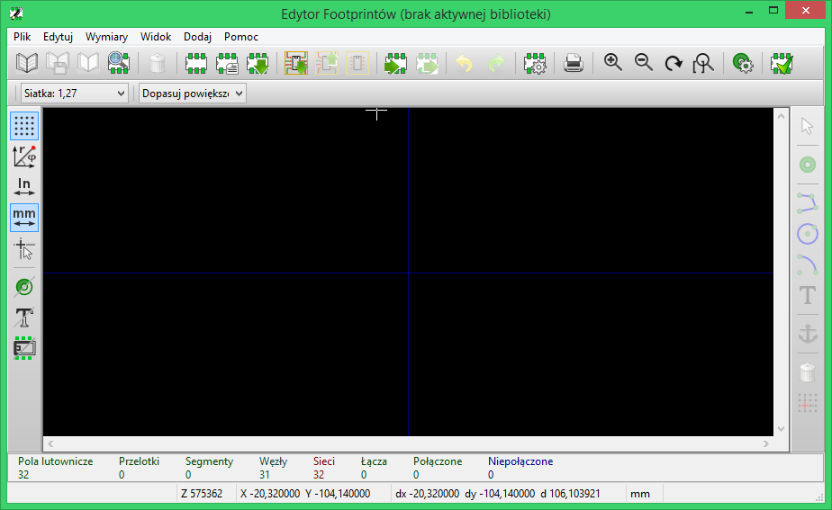
Prawy pasek narzêdziowy - edycja elementów sk³adowych
 |
Ten pasek narzêdzi zawiera narzêdzia do tworzenia elementów sk³adowych footprintów:
|
Poszczególne narzêdzia s³u¿± do :
| Dodawania pól lutowniczych. | |
| Rysowania linii ³amanych. | |
| Rysowania pe³nych okrêgów. | |
| Rysowania wycinków okrêgu. | |
| Dodawania tekstu swobodnego (pola tekstowe nie s± zarz±dzane tym narzêdziem). | |
| Pozycjonowania punktu zaczepienia footprintu. | |
| Usuwania elementów graficznych footprintu. | |
| Ustawianie punktu zerowego siatki (przesuniêcie siatki). Przydatne przy umieszczaniu pól lutowniczych. Punkt zerowy siatki mo¿e byæ przesuniêty na wybran± pozycjê (na przyk³ad w miejscu pierwszego pada), a nastêpnie mo¿na dostosowaæ rozmiar siatki do rozstawu pól lutowniczych. W ten sposób umieszczanie pól lutowniczych bêdzie znacznie u³atwione. |
Lewy pasek narzêdziowy - opcje wy¶wietlania
 |
Te opcje s³u¿± do zarz±dzania opcjami wy¶wietlania. |
Opcje te s± aktywne je¶li dana ikona jest zaznaczona. Ich znaczenie jest nastêpuj±ce:
| W³±cza/Wy³±cza wy¶wietlanie siatki. | |
| W³±cza/Wy³±cza wy¶wietlanie wspó³rzêdnych wzglêdnych jako polarne. | |
| Prze³±cza pomiêdzy u¿ywanymi jednostkami miar. | |
| Prze³±cza rodzaj kursora (ma³y lub pe³noekranowy). | |
| W³±cza wy¶wietlanie pól lutowniczych jako niewype³niony zarys. | |
| W³±cza wy¶wietlanie tekstów jako niewype³niony zarys. | |
| W³±cza wy¶wietlanie konturów jako niewype³niony zarys. |
Menu podrêczne
Prawy klawisz myszy wywo³uje podrêczne menu, którego zawarto¶æ zale¿na jest od aktualnie wskazywanego elementu przez kursor:
| 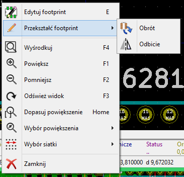 | Menu podrêczne z mo¿liwo¶ci± edycji parametrów footprintu. |
 |
Menu podrêczne z mo¿liwo¶ci± edycji pól lutowniczych. |
| 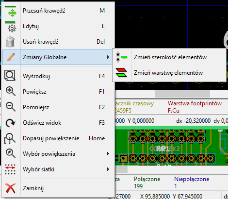 | Menu podrêczne z mo¿liwo¶ci± edycji elementów graficznych. |
Okno w³a¶ciwo¶ci footprintu
To okno dialogowe mo¿e zostaæ uruchomione, gdy kursor znajdzie siê nad footprintem i zostanie wykorzystany prawy klawisz myszy do wywo³ania polecenia Edycja footprintu. Okno to mo¿na tak¿e wywo³aæ za pomoc± ikony  z g³ównego paska narzêdzi ModEdit.
z g³ównego paska narzêdzi ModEdit.
Opcje zawarte tutaj mog± zostaæ u¿yte do zdefiniowania g³ównych parametrów footprintu.
Tworzenie nowego footprintu
Narzêdzie ukrywaj±ce siê pod ikon±  pozwala na utworzenie nowego footprintu. Po wybraniu tego narzêdzia, u¿ytkownik zostanie poproszony o podanie nazwy identyfikuj±cej nowy footprint w bibliotece. Nazwa ta bêdzie s³u¿yæ tak¿e jako oznaczenie footprintu i zostanie zast±piona pó¼niej na obwodzie drukowanym przez oznaczenie z listy sieci (
pozwala na utworzenie nowego footprintu. Po wybraniu tego narzêdzia, u¿ytkownik zostanie poproszony o podanie nazwy identyfikuj±cej nowy footprint w bibliotece. Nazwa ta bêdzie s³u¿yæ tak¿e jako oznaczenie footprintu i zostanie zast±piona pó¼niej na obwodzie drukowanym przez oznaczenie z listy sieci (U1, IC3...).
Aby footprint by³ kompletny, bêdzie potrzebne równie¿ dodanie tak¿e nastêpuj±cych elementów sk³adowych footprintu :
- Obrys footprintu (i tekst je¶li potrzeba);
- Pola lutownicze;
- Pole tekstowe Warto¶æ (zawieraj±ce tekst, który bêdzie zast±piony przez prawdziw± warto¶æ przypisan± z listy sieci).
Gdy nowy footprint jest podobny do innego footprintu jaki istnieje w bibliotece albo na p³ytce, mo¿na u¿yæ szybszej metody tworzenia nowego footprintu:
- Za³adowaæ podobny footprint (korzystaj±c z narzêdzi , , lub )
- Zmodyfikowaæ pole z nazw± identyfikacyjn±, wpisuj±c now± nazwê.
- Dokonaæ edycji oraz zapisaæ nowy footprint.
Dodawanie i edycja pól lutowniczych
Po stworzeniu zal±¿ka footprintu, mo¿na bêdzie dodawaæ, usuwaæ lub modyfikowaæ pola lutownicze. Modyfikacja pól lutowniczych mo¿e obejmowaæ tylko aktualnie wybrany pole lutownicze, lub te¿ obejmowaæ wszystkie pola lutownicze footprintu.
Dodawanie pola lutowniczego
Dodawanie pól lutowniczych jest aktywowane przez wybranie narzêdzie  na prawym pasku narzêdzi.
na prawym pasku narzêdzi.
Pola lutownicze mo¿na umieszczaæ w polu roboczym klikaj±c w miejscu gdzie taki pole lutownicze ma siê znale¼æ. Ich w³a¶ciwo¶ci mo¿na zdefiniowaæ wcze¶niej za pomoc± menu W³a¶ciwo¶ci pól lutowniczych.
Nale¿y pamiêtaæ o wprowadzeniu numeru padu.
W przypadku pól lutowniczych z numerem w postaci liczbowej, ModEdit sam bêdzie zwiêksza³ numer padu, podczas stawiania nastêpnych pól lutowniczych.
Ustawianie w³a¶ciwo¶ci pól lutowniczych
Ustawianie w³a¶ciwo¶ci pól lutowniczych mo¿e odbywaæ siê na trzy sposoby :
- Mo¿na ustaliæ parametry pól lutowniczych wcze¶niej, wybieraj±c narzêdzie
 z g³ównego paska narzêdzi edytora.
z g³ównego paska narzêdzi edytora. - Klikaj±c na istniej±cym padzie, wybieraj±c polecenie Edytuj pole. Mo¿na wtedy zmodyfikowaæ ustawienia tego jednego pola lutowniczego.
- Klikaj±c na istniej±cym padzie, wybieraj±c polecenie Eksportuj ustawienia pola lutowniczego. W tym jednak przypadku, w³a¶ciwo¶ci geometryczne wybranego padu stan± siê domy¶lnymi w³a¶ciwo¶ciami pól lutowniczych.
W przypadku dwóch pierwszych sposobów edycji, wy¶wietlone zostanie nastêpuj±ce okno dialogowe:
Nale¿y zwróciæ szczególn± uwagê przy prawid³owym ustawieniu warstw do których nale¿eæ bêdzie pole lutownicze. Choæ warstwy miedzi s± do¶æ proste do zdefiniowania, to zarz±dzanie warstwami technicznymi (maski lutowniczej, pasty lutowniczej, itp...) jest równie wa¿ne przy produkcji obwodów elektronicznych i ich dokumentowaniu.
Wybór jednej z opcji dostêpnej w grupie Typ pola powoduje automatyczny wybór warstw, która na ogó³ jest wystarczaj±ca.
Uwaga pierwsza - Elementy SMD
Footprinty SMD typu VQFP/PQFP, które maj± prostok±tne pola lutownicze ze wszystkich czterech stron, tj. zarówno w poziomie i pionie, zaleca siê u¿ywaæ tylko jednego kszta³tu (np. poziomy prostok±t) i umieszczaæ go pod ró¿nymi kierunkami (0 stopni dla poziomych i 90 stopni dla pionowych). Globalne zmiany rozmiaru pól lutowniczych mog± byæ wtedy wykonane za pomoc± jednej operacji.
Uwaga druga - Stosowanie obrotu
Obracanie o -90 lub -180 stopni s± tylko wymagane dla pól lutowniczych trapezoidalnych u¿ywanych w footprintach mikrofalowych.
Uwaga trzecia - Pola lutownicze z opcj± Non Plated
- Pola lutownicze mog± zostaæ zdefiniowane jako Non Plated Through Hole (pola lutownicze NPTH).
- Te pola lutownicze musz± zostaæ zdefiniowane na jednym lub wszystkich warstwach miedzi (oczywi¶cie, otwór w padzie bêdzie wystêpowa³ na wszystkich warstwach miedzi).
- Wymóg ten pozwala na zdefiniowanie parametrów prze¶witu (na przyk³ad jako prze¶wit dla ¶rub monta¿owych).
- Gdy otwór w padzie jest tego samego rozmiaru jak rozmiar padu w polach o kszta³cie zaokr±glonym lub owalnym, to takie pole lutownicze NIE jest rysowane na warstwach miedzi w plikach GERBER.
- Te pola lutownicze maj± swoje przeznaczenie mechaniczne, jednak nie jest dopuszczalne stosowanie nazw w³asnych lub nazw sieci dla takich pól lutowniczych. £±czenie ich z sieciami jest niemo¿liwe.
Uwaga czwarta - Pola lutownicze na warstwach technicznych
Te pola lutownicze zwykle nie s± u¿yteczne. Opcja ta mo¿e byæ stosowana przy tworzeniu markerów pozycjonuj±cych (przy monta¿u automatycznym) lub masek na warstwach technicznych.
Pola niestandardowe
Parametr: Przesuniêcie X (Y)
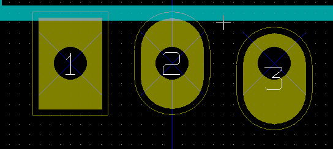
Pole lutownicze o numerze 3 posiada parametr Przesuniêcie Y ustawione na 15mils.
Parametr: Nachylenie pola (pola trapezoidalne)
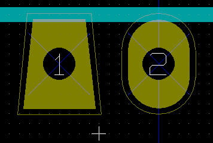
Pole lutownicze numer 1 posiada parametr Nachylenie ustawiony na 10mils.
Ustawianie prze¶witu masek pasty i lutowniczej dla pól lutowniczych
Warto¶ci prze¶witu masek mog± byæ ustawione globalnie na trzech poziomach:
- Na poziomie pól lutowniczych.
- Na poziomie footprintów.
- Globalnie.
Pcbnew w takim przypadku korzysta z priorytetów ustawieñ i warto¶æ ostateczna jest brana z:
- Warto¶ci ustalonej dla pól lutowniczych. Je¶li jest zerowa to:
- Z warto¶ci ustalonej dla footprintu. Je¶li jest zerowa to :
- Z warto¶ci ustalonej globalnie.
Uwagi
Warto¶æ dla maski lutowniczej jest dodatnia, poniewa¿ maska lutownicza jest zwykle wiêksza ni¿ pole lutownicze.
Warto¶æ dla maski pasty lutowniczej jest ujemna poniewa¿ maska pasty lutowniczej jest zwykle mniejsza ni¿ pole lutownicze.
Parametry maski pasty lutowniczej
S± dwa parametry:
- Warto¶æ ustalona.
- Procent rozmiaru pola lutowniczego.
- Warto¶æ realna jest sum± tych dwóch warto¶ci.
Ustawienia na poziomie footprintów
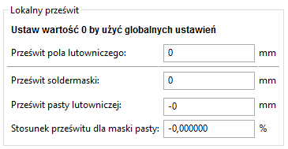
Ustawienia na poziomie pól lutowniczych

W³a¶ciwo¶ci pól tekstowych
Ka¿dy footprint posiada minimum dwa pola tekstowe : Oznaczenie i Warto¶æ. Ich parametry (atrybuty, rozmiar, szeroko¶æ) musz± zostaæ zaktualizowane.
Dostêp do w³a¶ciwo¶ci pól tekstowych zapewnia menu podrêczne, wywo³ywane przez podwójne klikniêcie prawym klawiszem na tre¶ci pola, albo poprzez okno z w³a¶ciwo¶ciami footprintu.
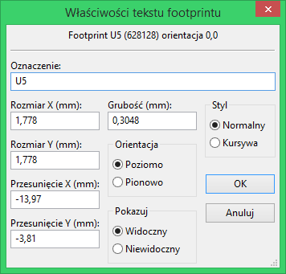
Informacje na temat automatycznego rozmieszczania footprintów
Je¶li u¿ytkownik zechce wykorzystaæ w pe³ni mo¿liwo¶ci funkcji automatycznego rozmieszczania footprintów, konieczne jest okre¶lenie dozwolonej orientacji footprintu (w oknie dialogowym W³a¶ciwo¶ci footprintu).
Zazwyczaj, obrót o 180 stopni jest dozwolony dla rezystorów, niespolaryzowanych kondensatorów i innych elementów symetrycznych. Dla niektórych footprintów (na przyk³ad dla ma³ych tranzystorów) jest czêsto dozwolony obrót o +/-90 lub 180 stopni. Domy¶lnie, nowy footprint bêdzie mia³ zezwolenie do obrotu ustawione na zero.
Mo¿e to byæ dostosowane wed³ug nastêpuj±cej zasady: Warto¶æ 0 powoduje ¿e obrót jest niemo¿liwy, warto¶æ 10 pozwala na pe³ny obrót, a wszystkie po¶rednie warto¶ci, stanowi± blokady obrotu.
Na przyk³ad, rezystor mo¿e mieæ zezwolenie na poziomie 10 do obrotu o 180 stopni (nieograniczone) i zgodê na poziomie 5 do obrotu o +/- 90 stopni (dozwolone, ale niezalecane).
Atrybuty
Sekcja atrybutów jest nastêpuj±ca:
- Normalny to standardowy atrybut dla elementów przewlekanych.
- Normalny+Wstawianie oznacza, ¿e ten element musi zostaæ umieszczony w pliku po³o¿eñ footprintów (dla automatów monta¿owych).
Ten atrybut jest zwykle u¿ywany przy elementach przeznaczonych do monta¿u powierzchniowego (SMD). - Wirtualny oznacza, ¿e ten element jest bezpo¶rednio tworzony na p³ytce. Przyk³adem mo¿e byæ z³±cze krawêdziowe lub te¿ cewki p³askie tworzone bezpo¶rednio ze ¶cie¿ek (spotykane czasem w footprintach mikrofalowych).
Dokumentacja dla bibliotek footprintów
Zaleca siê dokumentowaæ footprinty, które zosta³y utworzone, w celu umo¿liwienia szybkiego i bezb³êdnego ich wyszukiwania. Na przyk³ad, ile osób jest w stanie zapamiêtaæ wszystkie warianty wyprowadzeñ obudowy TO92 ?
Okno dialogowe W³a¶ciwo¶ci footprintu oferuje proste rozwi±zanie tego problemu.
Pozwala ono na wprowadzenie :
- Jednoliniowego tekstu z opisem footprintu;
- Wielu s³ów kluczowych rozdzielonych spacjami.
Opis footprintu jest wy¶wietlany przez CvPcb na dolnym pasku oraz w Pcbnew w oknie z wyborem footprintu na dolnym panelu.
S³owa kluczowe pozwalaj± na szczegó³owe wyszukiwanie footprintów pasuj±cych do okre¶lonych s³ów. Podczas bezpo¶redniego wczytywania footprintów w Pcbnew (ikona  na prawym pasku narzêdzi) mo¿na u¿yæ s³ów kluczowych w otwieraj±cym siê wtedy oknie dialogowym. Wpisuj±c na przyk³ad tekst
na prawym pasku narzêdzi) mo¿na u¿yæ s³ów kluczowych w otwieraj±cym siê wtedy oknie dialogowym. Wpisuj±c na przyk³ad tekst =CONN spowoduje, ¿e na li¶cie pojawi± siê footprinty, których s³owa kluczowe zawieraj± s³owo CONN.
Zarz±dzanie modelami do wizualizacji 3D
Footprintowi mo¿na przypisaæ plik (lub pliki) zawieraj±ce reprezentacjê 3D odpowiadaj±c± realnemu komponentowi. W celu w³±czenia takiego plik do footprintu, wybierz zak³adkê Ustawienia 3D we w³a¶ciwo¶ciach footprintu.
Panel zarz±dzaj±cy ustawieniami 3D wygl±da w ten sposób :
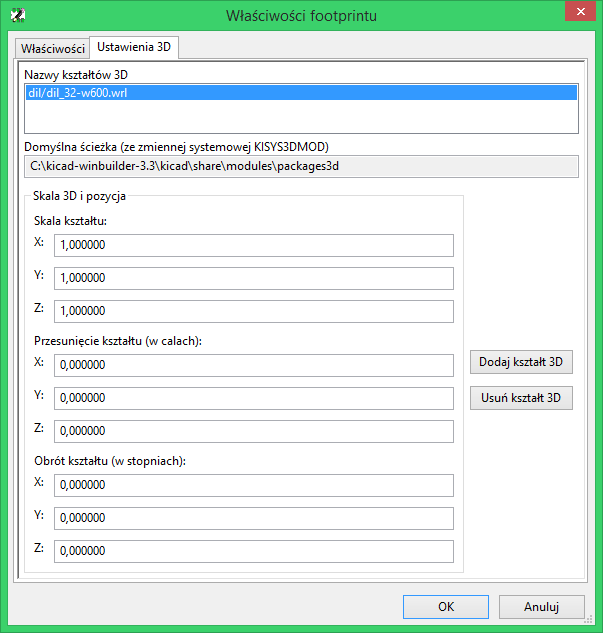
Aby przydzieliæ footprintowi jego reprezentacjê 3D nale¿y okre¶liæ :
- Plik zawieraj±cy model 3D (stworzony przez narzêdzie do modelowania 3D Wings3d, w formacie VRML, za pomoc± polecenia eksportu do VRML).
- Domy¶ln± ¶cie¿k± dla modeli 3D jest
kicad/modules/package3dzawart± w zmiennej systemowej KISYS3DMOD. W tym przyk³adzie, plik nazywa siêdiscret/to_220horiz.wrl, u¿ywaj±cy domy¶lnej ¶cie¿ki pocz±tkowej) - Skalê modelu w trzech osiach : X, Y oraz Z.
- Przesuniêcie modelu wzglêdem punktu zaczepienia footprintu (zwykle warto¶æ jest równa zero).
- Pocz±tkowy obrót modelu 3D w ka¿dej osi (zwykle warto¶ci jest równa zero).
Ustawienie skali modelu pozwala na:
- U¿ycie tych samych plików z modelem 3D dla footprintów, które posiadaj± podobne kszta³ty ale ró¿ni± siê rozmiarem (np. Rezystory, kondensatory, elementy 3D...)
- Dla ma³ych (lub bardzo du¿ych) obudów, lepszym rozwi±zaniem jest u¿ycie siatki Wings3D :
Skala 1:1 to 0.1cala w Pcbnew i równa siê 1 jednostce siatki w Wings3D
Je¶li plik(i) z modelem zostan± okre¶lone, mo¿liwe stanie siê przegl±danie komponentów w przestrzeni 3D:
Model 3D automatycznie pojawi siê tak¿e podczas wizualizacji PCB w trybie 3D.
Zapis footprintu w aktywnej bibliotece
Operacja zapisu footprintu (modyfikuj±ca plik aktywnej biblioteki) jest przeprowadzana za pomoc± polecenia Zapisz  . Je¶li footprint o tej samej nazwie ju¿ istnieje, zostanie on zast±piony.
. Je¶li footprint o tej samej nazwie ju¿ istnieje, zostanie on zast±piony.
Poniewa¿ tworzone obwody drukowane bêd± zale¿eæ od dok³adno¶ci footprintów w bibliotece, warto przed zapisaniem footprintu dwukrotnie sprawdziæ nowy footprint przed jego zapisem.
Zalecane jest równie¿, dokonanie edycji pól z nazw± footprintu, bêd±cych jego identyfikatorem w bibliotece.
Zapis footprintu na p³ytce
Je¶li edytowany footprint pochodzi³ z bie¿±cej p³ytki, nale¿y go uaktualniæ za pomoc± polecenia Uaktualnij footprint  znajduj±cym siê na górnym pasku narzêdzi.
znajduj±cym siê na górnym pasku narzêdzi.
13. ModView - Przegl±darka bibliotek
Przeznaczenie
Przegl±darka bibliotek pozwala na szybkie sprawdzenie zawarto¶ci aktywnych bibliotek.
Przegl±darkê mo¿na wywo³aæ klikaj±c w ikonê .
Ekran g³ówny
By sprawdziæ zawarto¶æ biblioteki nale¿y j± wybraæ z listy znajduj±cej siê po lewej stronie okna.
Jej zawarto¶æ zostanie pokazana na drugiej li¶cie, z której mo¿na wybraæ jeden z footprintów, którego podgl±d pojawi siê w panelu po prawej stronie.
Pasek narzêdzi przegl±darki bibliotek
Podstawowy pasek narzêdzi wygl±da w ten sposób:

lub (je¶li przegl±darka zosta³a wywo³ana z okna dialogowego Pcbnew podczas operacji wstawiania footprintów:

Poszczególne polecenia to:
| Wybór przegl±danej biblioteki (który mo¿e byæ równie¿ zrealizowany poprzez wybór z listy). | |
| Wybór footprintu z biblioteki (który mo¿e byæ równie¿ zrealizowany przez wybór z listy). | |
| Przej¶cie do poprzedniego footprintu na li¶cie. | |
| Przej¶cie do nastêpnego footprintu na li¶cie. | |
| Narzêdzia do dostosowywania powiêkszenia. | |
| Podgl±d reprezentacji 3D wybranego footprintu. | |
| Zamyka przegl±darkê bibliotek i wstawia wybrany footprint na p³ytkê. |